<!DOCTYPE html><html style="height:100%;"><head lang="en"><meta charset="UTF-8"><meta name="viewport" content="width=device-width, initial-scale=1"><meta name="google-site-verification" content="wcRjktXhF6DAjmhneKS7UatweBIkEF6QfqsNhAYbUgg"><title>Babylon.js Documentation</title><link rel="shortcut icon" href="/img/favicon.ico"><meta name="msapplication-TileColor" content="#ffffff"><meta name="theme-color" content="#ffffff"><link rel="stylesheet" href="https://use.typekit.net/cta4xsb.css"><link rel="stylesheet" href="//cdnjs.cloudflare.com/ajax/libs/normalize/3.0.3/normalize.min.css"><link rel="stylesheet" href="/css/libs/slideout.css"><link rel="stylesheet" href="/css/libs/highlight/github.css"><link rel="stylesheet" href="//maxcdn.bootstrapcdn.com/font-awesome/4.3.0/css/font-awesome.min.css"><link rel="stylesheet" href="//cdnjs.cloudflare.com/ajax/libs/jquery.perfect-scrollbar/0.6.3/css/perfect-scrollbar.min.css"><link rel="stylesheet" href="/css/main.css"><link rel="stylesheet" href="//cdnjs.cloudflare.com/ajax/libs/highlight.js/9.10.0/styles/default.min.css"></head><body><nav id="menu"></nav></body></html><nav class="nav-main" style="position:inherit;"><!-- Hamburger menu : displayed only in small screens--><i class="fa fa-bars" id="mobilemenu"></i><div class="banner"><div class="menu"><div class="do-not-hover" id="home"><a href="/">HOME</a></div><div class="item" id="whatsnew"><a href="/whats-new">What's new</a></div><div class="item" id="feature"><a href="/babylon101">Babylon 101      </a></div><div class="item" id="feature"><a href="/examples">Examples                        </a></div><div class="item" id="How_To"><a href="/How_To">How To...</a></div><div class="item" id="feature"><a href="/features">Features</a></div><div class="item" id="resources"><a href="/resources">Resources</a></div><div class="item" id="extensions"><a href="/extensions">Extensions</a></div><div class="item" id="samples"><a href="/snippets">Snippets        </a></div><div class="item" id="classes"><a href="/api">API</a></div><div class="item" id="playground"><a href="/playground">Playground</a></div></div><div class="more"><div class="searchbar"><form method="get" action="/search"><input type="text" name="bjsq" placeholder="Search..."><button type="submit"><i class="fa fa-search"></i></button></form></div></div></div></nav><div class="example" id="wrapper"><div id="examplePage"><div id="example-banner"><h1>Examples</h1></div><div class="horizontal-separator"></div><input id="filterBar" type="text" name="filter" placeholder="Filter examples..."><div class="categoryContainer"><p>Animations<div class="itemLine Animation 101 contentBlock" id="0" onclick="load('#QYFDDP#1','0')">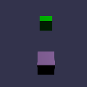<div class="contentDiv0 itemContent"><div class="contentDivPlaygrond" onclick="loadMobile('#QYFDDP#1')"><h3 class="itemLineChild" onclick="loadMobile('#QYFDDP#1')">Animation 101</h3><p class="itemLineChild">How to add animations</p></div><a class="itemLineChildLink childLink" href="https://doc.babylonjs.com/babylon101/animations" target="_blank">Documentation</a><a class="itemLineChildLink childLink" href="https://playground.babylonjs.com/frame.html#QYFDDP#1" target="_blank" id="PGlink_#QYFDDP#1">Playground</a></div></div><div class="itemLine Animation blending contentBlock" id="1" onclick="load('#BCU1XR#0','1')">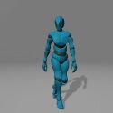<div class="contentDiv1 itemContent"><div class="contentDivPlaygrond" onclick="loadMobile('#BCU1XR#0')"><h3 class="itemLineChild" onclick="loadMobile('#BCU1XR#0')">Animation blending</h3><p class="itemLineChild">Blend multiple animations together to move from on animation clip to another</p></div><a class="itemLineChildLink childLink" href="https://doc.babylonjs.com/babylon101/Animations#animation-blending" target="_blank">Documentation</a><a class="itemLineChildLink childLink" href="https://playground.babylonjs.com/frame.html#BCU1XR#0" target="_blank" id="PGlink_#BCU1XR#0">Playground</a></div></div><div class="itemLine Animation weights contentBlock" id="2" onclick="load('#LL5BIQ#0','2')">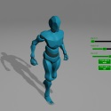<div class="contentDiv2 itemContent"><div class="contentDivPlaygrond" onclick="loadMobile('#LL5BIQ#0')"><h3 class="itemLineChild" onclick="loadMobile('#LL5BIQ#0')">Animation weights</h3><p class="itemLineChild">Use weights to blend multiple animations together</p></div><a class="itemLineChildLink childLink" href="https://doc.babylonjs.com/babylon101/animations#animation-weights" target="_blank">Documentation</a><a class="itemLineChildLink childLink" href="https://playground.babylonjs.com/frame.html#LL5BIQ#0" target="_blank" id="PGlink_#LL5BIQ#0">Playground</a></div></div><div class="itemLine Bones 101 contentBlock" id="3" onclick="load('#QY1WYT#0','3')">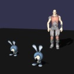<div class="contentDiv3 itemContent"><div class="contentDivPlaygrond" onclick="loadMobile('#QY1WYT#0')"><h3 class="itemLineChild" onclick="loadMobile('#QY1WYT#0')">Bones 101</h3><p class="itemLineChild">Create complex animations by using skeletons and bones</p></div><a class="itemLineChildLink childLink" href="https://doc.babylonjs.com/How_To/How_to_use_Bones_and_Skeletons" target="_blank">Documentation</a><a class="itemLineChildLink childLink" href="https://playground.babylonjs.com/frame.html#QY1WYT#0" target="_blank" id="PGlink_#QY1WYT#0">Playground</a></div></div><div class="itemLine Easing functions contentBlock" id="4" onclick="load('#8ZNVGR#0','4')">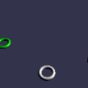<div class="contentDiv4 itemContent"><div class="contentDivPlaygrond" onclick="loadMobile('#8ZNVGR#0')"><h3 class="itemLineChild" onclick="loadMobile('#8ZNVGR#0')">Easing functions</h3><p class="itemLineChild">Create animations with different easing functions</p></div><a class="itemLineChildLink childLink" href="https://doc.babylonjs.com/babylon101/animations#easing-functions" target="_blank">Documentation</a><a class="itemLineChildLink childLink" href="https://playground.babylonjs.com/frame.html#8ZNVGR#0" target="_blank" id="PGlink_#8ZNVGR#0">Playground</a></div></div><div class="itemLine Instanced bones contentBlock" id="5" onclick="load('#0K8EYN#0','5')">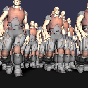<div class="contentDiv5 itemContent"><div class="contentDivPlaygrond" onclick="loadMobile('#0K8EYN#0')"><h3 class="itemLineChild" onclick="loadMobile('#0K8EYN#0')">Instanced bones</h3><p class="itemLineChild">Animated skeletons of people walking</p></div><a class="itemLineChildLink childLink" href="https://doc.babylonjs.com/how_to/how_to_use_bones_and_skeletons" target="_blank">Documentation</a><a class="itemLineChildLink childLink" href="https://playground.babylonjs.com/frame.html#0K8EYN#0" target="_blank" id="PGlink_#0K8EYN#0">Playground</a></div></div><div class="itemLine Morph targets contentBlock" id="6" onclick="load('#2JDN66#7','6')">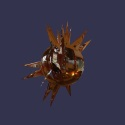<div class="contentDiv6 itemContent"><div class="contentDivPlaygrond" onclick="loadMobile('#2JDN66#7')"><h3 class="itemLineChild" onclick="loadMobile('#2JDN66#7')">Morph targets</h3><p class="itemLineChild">Morph a mesh between multiple targets</p></div><a class="itemLineChildLink childLink" href="https://doc.babylonjs.com/how_to/how_to_use_morphtargets" target="_blank">Documentation</a><a class="itemLineChildLink childLink" href="https://playground.babylonjs.com/frame.html#2JDN66#7" target="_blank" id="PGlink_#2JDN66#7">Playground</a></div></div></p></div><div class="categoryContainer"><p>Cameras<div class="itemLine Cameras 101 contentBlock" id="7" onclick="load('#1A3M5C#0','7')"><div class="contentDiv7 itemContent"><div class="contentDivPlaygrond" onclick="loadMobile('#1A3M5C#0')"><h3 class="itemLineChild" onclick="loadMobile('#1A3M5C#0')">Cameras 101</h3><p class="itemLineChild">Types of cameras in babylonjs</p></div><a class="itemLineChildLink childLink" href="https://doc.babylonjs.com/babylon101/cameras" target="_blank">Documentation</a><a class="itemLineChildLink childLink" href="https://playground.babylonjs.com/frame.html#1A3M5C#0" target="_blank" id="PGlink_#1A3M5C#0">Playground</a></div></div><div class="itemLine Device orientation camera contentBlock" id="8" onclick="load('#SRZRWV#5','8')">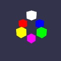<div class="contentDiv8 itemContent"><div class="contentDivPlaygrond" onclick="loadMobile('#SRZRWV#5')"><h3 class="itemLineChild" onclick="loadMobile('#SRZRWV#5')">Device orientation camera</h3><p class="itemLineChild">Camera that reacts to events such as a mobile device being tilted forward or back</p></div><a class="itemLineChildLink childLink" href="https://doc.babylonjs.com/babylon101/cameras#device-orientation-camera" target="_blank">Documentation</a><a class="itemLineChildLink childLink" href="https://playground.babylonjs.com/frame.html#SRZRWV#5" target="_blank" id="PGlink_#SRZRWV#5">Playground</a></div></div></p></div><div class="categoryContainer"><p>GUI<div class="itemLine 3D GUI contentBlock" id="9" onclick="load('#HB4C01#9','9')">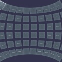<div class="contentDiv9 itemContent"><div class="contentDivPlaygrond" onclick="loadMobile('#HB4C01#9')"><h3 class="itemLineChild" onclick="loadMobile('#HB4C01#9')">3D GUI</h3><p class="itemLineChild">Babylon.js 3D graphical user interface provides 3D buttons, 3D containers etc.</p></div><a class="itemLineChildLink childLink" href="https://doc.babylonjs.com/how_to/gui3d" target="_blank">Documentation</a><a class="itemLineChildLink childLink" href="https://playground.babylonjs.com/frame.html#HB4C01#9" target="_blank" id="PGlink_#HB4C01#9">Playground</a></div></div><div class="itemLine 3D GUI - MeshButton3D contentBlock" id="10" onclick="load('#8Y780Y#52','10')"><div class="contentDiv10 itemContent"><div class="contentDivPlaygrond" onclick="loadMobile('#8Y780Y#52')"><h3 class="itemLineChild" onclick="loadMobile('#8Y780Y#52')">3D GUI - MeshButton3D</h3><p class="itemLineChild">Uses MeshButton3D to create custom 3D buttons</p></div><a class="itemLineChildLink childLink" href="https://doc.babylonjs.com/how_to/gui3d#meshbutton3d" target="_blank">Documentation</a><a class="itemLineChildLink childLink" href="https://playground.babylonjs.com/frame.html#8Y780Y#52" target="_blank" id="PGlink_#8Y780Y#52">Playground</a></div></div><div class="itemLine App Bar (AttachToBoxBehavior) contentBlock" id="11" onclick="load('#8GY6J8#180','11')">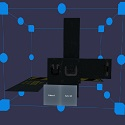<div class="contentDiv11 itemContent"><div class="contentDivPlaygrond" onclick="loadMobile('#8GY6J8#180')"><h3 class="itemLineChild" onclick="loadMobile('#8GY6J8#180')">App Bar (AttachToBoxBehavior)</h3><p class="itemLineChild">Attach a menu to a bounding box such that it always faces the user</p></div><a class="itemLineChildLink childLink" href="https://doc.babylonjs.com/how_to/meshbehavior" target="_blank">Documentation</a><a class="itemLineChildLink childLink" href="https://playground.babylonjs.com/frame.html#8GY6J8#180" target="_blank" id="PGlink_#8GY6J8#180">Playground</a></div></div><div class="itemLine GUI contentBlock" id="12" onclick="load('#3VMTI9#0','12')">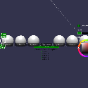<div class="contentDiv12 itemContent"><div class="contentDivPlaygrond" onclick="loadMobile('#3VMTI9#0')"><h3 class="itemLineChild" onclick="loadMobile('#3VMTI9#0')">GUI</h3><p class="itemLineChild">Babylon.js graphical user interface provides sliders, buttons, etc.</p></div><a class="itemLineChildLink childLink" href="https://doc.babylonjs.com/how_to/gui" target="_blank">Documentation</a><a class="itemLineChildLink childLink" href="https://playground.babylonjs.com/frame.html#3VMTI9#0" target="_blank" id="PGlink_#3VMTI9#0">Playground</a></div></div></p></div><div class="categoryContainer"><p>Interactions & events<div class="itemLine Actions contentBlock" id="13" onclick="load('#J19GYK#0','13')">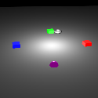<div class="contentDiv13 itemContent"><div class="contentDivPlaygrond" onclick="loadMobile('#J19GYK#0')"><h3 class="itemLineChild" onclick="loadMobile('#J19GYK#0')">Actions</h3><p class="itemLineChild">Actions are a simple way to add interactions in your scenes</p></div><a class="itemLineChildLink childLink" href="https://doc.babylonjs.com/how_to/how_to_use_actions" target="_blank">Documentation</a><a class="itemLineChildLink childLink" href="https://playground.babylonjs.com/frame.html#J19GYK#0" target="_blank" id="PGlink_#J19GYK#0">Playground</a></div></div><div class="itemLine Drag and drop contentBlock" id="14" onclick="load('#UZ23UH#0','14')">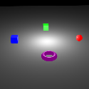<div class="contentDiv14 itemContent"><div class="contentDivPlaygrond" onclick="loadMobile('#UZ23UH#0')"><h3 class="itemLineChild" onclick="loadMobile('#UZ23UH#0')">Drag and drop</h3><p class="itemLineChild">Move meshes around a scene with a mouse</p></div><a class="itemLineChildLink childLink" href="https://doc.babylonjs.com/how_to/how_to_use_actions" target="_blank">Documentation</a><a class="itemLineChildLink childLink" href="https://playground.babylonjs.com/frame.html#UZ23UH#0" target="_blank" id="PGlink_#UZ23UH#0">Playground</a></div></div><div class="itemLine Gizmo/Manipulator contentBlock" id="15" onclick="load('#8MGKWK#25','15')">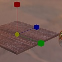<div class="contentDiv15 itemContent"><div class="contentDivPlaygrond" onclick="loadMobile('#8MGKWK#25')"><h3 class="itemLineChild" onclick="loadMobile('#8MGKWK#25')">Gizmo/Manipulator</h3><p class="itemLineChild">Position, Rotate and Scale meshes with a pointer</p></div><a class="itemLineChildLink childLink" href="https://doc.babylonjs.com/how_to/gizmo" target="_blank">Documentation</a><a class="itemLineChildLink childLink" href="https://playground.babylonjs.com/frame.html#8MGKWK#25" target="_blank" id="PGlink_#8MGKWK#25">Playground</a></div></div><div class="itemLine Keyboard + game loop contentBlock" id="16" onclick="load('#15EY4F#0','16')">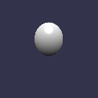<div class="contentDiv16 itemContent"><div class="contentDivPlaygrond" onclick="loadMobile('#15EY4F#0')"><h3 class="itemLineChild" onclick="loadMobile('#15EY4F#0')">Keyboard + game loop</h3><p class="itemLineChild">Move a sphere around with the keyboard</p></div><a class="itemLineChildLink childLink" href="https://doc.babylonjs.com/how_to/how_to_use_actions" target="_blank">Documentation</a><a class="itemLineChildLink childLink" href="https://playground.babylonjs.com/frame.html#15EY4F#0" target="_blank" id="PGlink_#15EY4F#0">Playground</a></div></div><div class="itemLine Picking contentBlock" id="17" onclick="load('#NU4F6Y#0','17')"><div class="contentDiv17 itemContent"><div class="contentDivPlaygrond" onclick="loadMobile('#NU4F6Y#0')"><h3 class="itemLineChild" onclick="loadMobile('#NU4F6Y#0')">Picking</h3><p class="itemLineChild">Use mouse or touch to pick meshes on the screen</p></div><a class="itemLineChildLink childLink" href="https://doc.babylonjs.com/babylon101/picking_collisions" target="_blank">Documentation</a><a class="itemLineChildLink childLink" href="https://playground.babylonjs.com/frame.html#NU4F6Y#0" target="_blank" id="PGlink_#NU4F6Y#0">Playground</a></div></div><div class="itemLine Pointer events handling contentBlock" id="18" onclick="load('#C245A1#0','18')">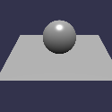<div class="contentDiv18 itemContent"><div class="contentDivPlaygrond" onclick="loadMobile('#C245A1#0')"><h3 class="itemLineChild" onclick="loadMobile('#C245A1#0')">Pointer events handling</h3><p class="itemLineChild">Handle pointer input</p></div><a class="itemLineChildLink childLink" href="https://doc.babylonjs.com/how_to/how_to_use_actions" target="_blank">Documentation</a><a class="itemLineChildLink childLink" href="https://playground.babylonjs.com/frame.html#C245A1#0" target="_blank" id="PGlink_#C245A1#0">Playground</a></div></div><div class="itemLine Using DeviceSourceManager contentBlock" id="19" onclick="load('#C7PM2B','19')">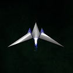<div class="contentDiv19 itemContent"><div class="contentDivPlaygrond" onclick="loadMobile('#C7PM2B')"><h3 class="itemLineChild" onclick="loadMobile('#C7PM2B')">Using DeviceSourceManager</h3><p class="itemLineChild">Control ship with keyboard or gamepad.</p></div><a class="itemLineChildLink childLink" href="https://doc.babylonjs.com/how_to/how_to_use_devicesourcemanager" target="_blank">Documentation</a><a class="itemLineChildLink childLink" href="https://playground.babylonjs.com/frame.html#C7PM2B" target="_blank" id="PGlink_#C7PM2B">Playground</a></div></div></p></div><div class="categoryContainer"><p>Lights<div class="itemLine Directional light contentBlock" id="20" onclick="load('#20OAV9#1','20')">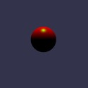<div class="contentDiv20 itemContent"><div class="contentDivPlaygrond" onclick="loadMobile('#20OAV9#1')"><h3 class="itemLineChild" onclick="loadMobile('#20OAV9#1')">Directional light</h3><p class="itemLineChild">The light is emitted from everywhere in the specified direction, and has an infinite range</p></div><a class="itemLineChildLink childLink" href="https://doc.babylonjs.com/babylon101/lights#the-directional-light" target="_blank">Documentation</a><a class="itemLineChildLink childLink" href="https://playground.babylonjs.com/frame.html#20OAV9#1" target="_blank" id="PGlink_#20OAV9#1">Playground</a></div></div><div class="itemLine Hemispheric light contentBlock" id="21" onclick="load('#20OAV9#5','21')">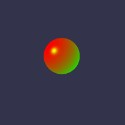<div class="contentDiv21 itemContent"><div class="contentDivPlaygrond" onclick="loadMobile('#20OAV9#5')"><h3 class="itemLineChild" onclick="loadMobile('#20OAV9#5')">Hemispheric light</h3><p class="itemLineChild">Simulate an ambient environment light</p></div><a class="itemLineChildLink childLink" href="https://doc.babylonjs.com/babylon101/lights#the-hemispheric-light" target="_blank">Documentation</a><a class="itemLineChildLink childLink" href="https://playground.babylonjs.com/frame.html#20OAV9#5" target="_blank" id="PGlink_#20OAV9#5">Playground</a></div></div><div class="itemLine Light projected texture contentBlock" id="22" onclick="load('#CQNGRK#0','22')"><div class="contentDiv22 itemContent"><div class="contentDivPlaygrond" onclick="loadMobile('#CQNGRK#0')"><h3 class="itemLineChild" onclick="loadMobile('#CQNGRK#0')">Light projected texture</h3><p class="itemLineChild">Project a texture from a spot light</p></div><a class="itemLineChildLink childLink" href="https://doc.babylonjs.com/babylon101/lights#projection-texture" target="_blank">Documentation</a><a class="itemLineChildLink childLink" href="https://playground.babylonjs.com/frame.html#CQNGRK#0" target="_blank" id="PGlink_#CQNGRK#0">Playground</a></div></div><div class="itemLine Lights 101 contentBlock" id="23" onclick="load('#AQRDKW#0','23')">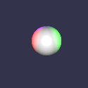<div class="contentDiv23 itemContent"><div class="contentDivPlaygrond" onclick="loadMobile('#AQRDKW#0')"><h3 class="itemLineChild" onclick="loadMobile('#AQRDKW#0')">Lights 101</h3><p class="itemLineChild">Add lights to a scene</p></div><a class="itemLineChildLink childLink" href="https://doc.babylonjs.com/babylon101/lights" target="_blank">Documentation</a><a class="itemLineChildLink childLink" href="https://playground.babylonjs.com/frame.html#AQRDKW#0" target="_blank" id="PGlink_#AQRDKW#0">Playground</a></div></div><div class="itemLine Point light contentBlock" id="24" onclick="load('#20OAV9#0','24')">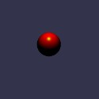<div class="contentDiv24 itemContent"><div class="contentDivPlaygrond" onclick="loadMobile('#20OAV9#0')"><h3 class="itemLineChild" onclick="loadMobile('#20OAV9#0')">Point light</h3><p class="itemLineChild">Light emitting from a single point</p></div><a class="itemLineChildLink childLink" href="https://doc.babylonjs.com/babylon101/lights#the-point-light" target="_blank">Documentation</a><a class="itemLineChildLink childLink" href="https://playground.babylonjs.com/frame.html#20OAV9#0" target="_blank" id="PGlink_#20OAV9#0">Playground</a></div></div><div class="itemLine Simultaneous lights contentBlock" id="25" onclick="load('#ZU5TKG#0','25')">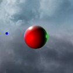<div class="contentDiv25 itemContent"><div class="contentDivPlaygrond" onclick="loadMobile('#ZU5TKG#0')"><h3 class="itemLineChild" onclick="loadMobile('#ZU5TKG#0')">Simultaneous lights</h3><p class="itemLineChild">Use multiple lights on a single mesh</p></div><a class="itemLineChildLink childLink" href="https://doc.babylonjs.com/babylon101/lights" target="_blank">Documentation</a><a class="itemLineChildLink childLink" href="https://playground.babylonjs.com/frame.html#ZU5TKG#0" target="_blank" id="PGlink_#ZU5TKG#0">Playground</a></div></div><div class="itemLine Spot light contentBlock" id="26" onclick="load('#20OAV9#3','26')">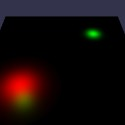<div class="contentDiv26 itemContent"><div class="contentDivPlaygrond" onclick="loadMobile('#20OAV9#3')"><h3 class="itemLineChild" onclick="loadMobile('#20OAV9#3')">Spot light</h3><p class="itemLineChild">Defines a cone of light pointing in a direction</p></div><a class="itemLineChildLink childLink" href="https://doc.babylonjs.com/babylon101/lights#the-spot-light" target="_blank">Documentation</a><a class="itemLineChildLink childLink" href="https://playground.babylonjs.com/frame.html#20OAV9#3" target="_blank" id="PGlink_#20OAV9#3">Playground</a></div></div></p></div><div class="categoryContainer"><p>Loaders<div class="itemLine Asset container contentBlock" id="27" onclick="load('#17MXFZ#34','27')">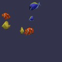<div class="contentDiv27 itemContent"><div class="contentDivPlaygrond" onclick="loadMobile('#17MXFZ#34')"><h3 class="itemLineChild" onclick="loadMobile('#17MXFZ#34')">Asset container</h3><p class="itemLineChild">To add and remove assets from a scene an AssetContainer can be used.</p></div><a class="itemLineChildLink childLink" href="https://doc.babylonjs.com/how_to/how_to_use_assetcontainer" target="_blank">Documentation</a><a class="itemLineChildLink childLink" href="https://playground.babylonjs.com/frame.html#17MXFZ#34" target="_blank" id="PGlink_#17MXFZ#34">Playground</a></div></div><div class="itemLine Assets manager contentBlock" id="28" onclick="load('#Y7XMAR#0','28')"><div class="contentDiv28 itemContent"><div class="contentDivPlaygrond" onclick="loadMobile('#Y7XMAR#0')"><h3 class="itemLineChild" onclick="loadMobile('#Y7XMAR#0')">Assets manager</h3><p class="itemLineChild">Use AssetsManager to load multiple assets in a centralized way</p></div><a class="itemLineChildLink childLink" href="https://doc.babylonjs.com/How_To/How_to_use_AssetsManager" target="_blank">Documentation</a><a class="itemLineChildLink childLink" href="https://playground.babylonjs.com/frame.html#Y7XMAR#0" target="_blank" id="PGlink_#Y7XMAR#0">Playground</a></div></div><div class="itemLine Cornell box contentBlock" id="29" onclick="load('#G3GZA1#49','29')"><div class="contentDiv29 itemContent"><div class="contentDivPlaygrond" onclick="loadMobile('#G3GZA1#49')"><h3 class="itemLineChild" onclick="loadMobile('#G3GZA1#49')">Cornell box</h3><p class="itemLineChild">Load a glTF file and setup the environment</p></div><a class="itemLineChildLink childLink" href="https://doc.babylonjs.com/how_to/load_from_any_file_type" target="_blank">Documentation</a><a class="itemLineChildLink childLink" href="https://playground.babylonjs.com/frame.html#G3GZA1#49" target="_blank" id="PGlink_#G3GZA1#49">Playground</a></div></div><div class="itemLine Import meshes contentBlock" id="30" onclick="load('#UKNERM#0','30')"><div class="contentDiv30 itemContent"><div class="contentDivPlaygrond" onclick="loadMobile('#UKNERM#0')"><h3 class="itemLineChild" onclick="loadMobile('#UKNERM#0')">Import meshes</h3><p class="itemLineChild">Load a mesh from a file and add it to the scene</p></div><a class="itemLineChildLink childLink" href="https://doc.babylonjs.com/how_to/load_from_any_file_type" target="_blank">Documentation</a><a class="itemLineChildLink childLink" href="https://playground.babylonjs.com/frame.html#UKNERM#0" target="_blank" id="PGlink_#UKNERM#0">Playground</a></div></div><div class="itemLine Load glTF model contentBlock" id="31" onclick="load('#SYQW69','31')"><div class="contentDiv31 itemContent"><div class="contentDivPlaygrond" onclick="loadMobile('#SYQW69')"><h3 class="itemLineChild" onclick="loadMobile('#SYQW69')">Load glTF model</h3><p class="itemLineChild">Show how to easily load a glTF model</p></div><a class="itemLineChildLink childLink" href="https://doc.babylonjs.com/how_to/load_from_any_file_type" target="_blank">Documentation</a><a class="itemLineChildLink childLink" href="https://playground.babylonjs.com/frame.html#SYQW69" target="_blank" id="PGlink_#SYQW69">Playground</a></div></div></p></div><div class="categoryContainer"><p>Materials<div class="itemLine Cell Shading contentBlock" id="32" onclick="load('#0ZB1A3#1','32')">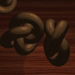<div class="contentDiv32 itemContent"><div class="contentDivPlaygrond" onclick="loadMobile('#0ZB1A3#1')"><h3 class="itemLineChild" onclick="loadMobile('#0ZB1A3#1')">Cell Shading</h3><p class="itemLineChild">Cell shading material</p></div><a class="itemLineChildLink childLink" href="https://doc.babylonjs.com/extensions/cell" target="_blank">Documentation</a><a class="itemLineChildLink childLink" href="https://playground.babylonjs.com/frame.html#0ZB1A3#1" target="_blank" id="PGlink_#0ZB1A3#1">Playground</a></div></div><div class="itemLine Fire contentBlock" id="33" onclick="load('#LR4YHT#0','33')"><div class="contentDiv33 itemContent"><div class="contentDivPlaygrond" onclick="loadMobile('#LR4YHT#0')"><h3 class="itemLineChild" onclick="loadMobile('#LR4YHT#0')">Fire</h3><p class="itemLineChild">Fire material</p></div><a class="itemLineChildLink childLink" href="https://doc.babylonjs.com/extensions/Fire" target="_blank">Documentation</a><a class="itemLineChildLink childLink" href="https://playground.babylonjs.com/frame.html#LR4YHT#0" target="_blank" id="PGlink_#LR4YHT#0">Playground</a></div></div><div class="itemLine Float on Water contentBlock" id="34" onclick="load('#L76FB1#49','34')"><div class="contentDiv34 itemContent"><div class="contentDivPlaygrond" onclick="loadMobile('#L76FB1#49')"><h3 class="itemLineChild" onclick="loadMobile('#L76FB1#49')">Float on Water</h3><p class="itemLineChild">Float on Water material</p></div><a class="itemLineChildLink childLink" href="https://doc.babylonjs.com/extensions/water" target="_blank">Documentation</a><a class="itemLineChildLink childLink" href="https://playground.babylonjs.com/frame.html#L76FB1#49" target="_blank" id="PGlink_#L76FB1#49">Playground</a></div></div><div class="itemLine Fur contentBlock" id="35" onclick="load('#VABI8A#0','35')"><div class="contentDiv35 itemContent"><div class="contentDivPlaygrond" onclick="loadMobile('#VABI8A#0')"><h3 class="itemLineChild" onclick="loadMobile('#VABI8A#0')">Fur</h3><p class="itemLineChild">Fur material</p></div><a class="itemLineChildLink childLink" href="https://doc.babylonjs.com/extensions/fur" target="_blank">Documentation</a><a class="itemLineChildLink childLink" href="https://playground.babylonjs.com/frame.html#VABI8A#0" target="_blank" id="PGlink_#VABI8A#0">Playground</a></div></div><div class="itemLine Glossiness and roughness contentBlock" id="36" onclick="load('#RNBKQ#8','36')"><div class="contentDiv36 itemContent"><div class="contentDivPlaygrond" onclick="loadMobile('#RNBKQ#8')"><h3 class="itemLineChild" onclick="loadMobile('#RNBKQ#8')">Glossiness and roughness</h3><p class="itemLineChild">Demonstration of glossiness and rouphness features of standard material</p></div><a class="itemLineChildLink childLink" href="https://doc.babylonjs.com/api/classes/babylon.standardmaterial" target="_blank">Documentation</a><a class="itemLineChildLink childLink" href="https://playground.babylonjs.com/frame.html#RNBKQ#8" target="_blank" id="PGlink_#RNBKQ#8">Playground</a></div></div><div class="itemLine Materials contentBlock" id="37" onclick="load('#DXARSP#0','37')">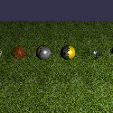<div class="contentDiv37 itemContent"><div class="contentDivPlaygrond" onclick="loadMobile('#DXARSP#0')"><h3 class="itemLineChild" onclick="loadMobile('#DXARSP#0')">Materials</h3><p class="itemLineChild">Create and add materials to a mesh</p></div><a class="itemLineChildLink childLink" href="https://doc.babylonjs.com/babylon101/materials" target="_blank">Documentation</a><a class="itemLineChildLink childLink" href="https://playground.babylonjs.com/frame.html#DXARSP#0" target="_blank" id="PGlink_#DXARSP#0">Playground</a></div></div><div class="itemLine MultiMaterial contentBlock" id="38" onclick="load('#2Q4S2S#0','38')">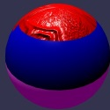<div class="contentDiv38 itemContent"><div class="contentDivPlaygrond" onclick="loadMobile('#2Q4S2S#0')"><h3 class="itemLineChild" onclick="loadMobile('#2Q4S2S#0')">MultiMaterial</h3><p class="itemLineChild">Apply multiple materials to a single mesh using MultiMaterial class</p></div><a class="itemLineChildLink childLink" href="https://doc.babylonjs.com/how_to/multi_materials" target="_blank">Documentation</a><a class="itemLineChildLink childLink" href="https://playground.babylonjs.com/frame.html#2Q4S2S#0" target="_blank" id="PGlink_#2Q4S2S#0">Playground</a></div></div><div class="itemLine PBR contentBlock" id="39" onclick="load('#8MGKWK#0','39')">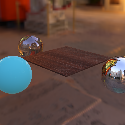<div class="contentDiv39 itemContent"><div class="contentDivPlaygrond" onclick="loadMobile('#8MGKWK#0')"><h3 class="itemLineChild" onclick="loadMobile('#8MGKWK#0')">PBR</h3><p class="itemLineChild">Physically based rendering materials</p></div><a class="itemLineChildLink childLink" href="https://doc.babylonjs.com/how_to/physically_based_rendering" target="_blank">Documentation</a><a class="itemLineChildLink childLink" href="https://playground.babylonjs.com/frame.html#8MGKWK#0" target="_blank" id="PGlink_#8MGKWK#0">Playground</a></div></div><div class="itemLine ShaderMaterial contentBlock" id="40" onclick="load('#ATDL99#0','40')"><div class="contentDiv40 itemContent"><div class="contentDivPlaygrond" onclick="loadMobile('#ATDL99#0')"><h3 class="itemLineChild" onclick="loadMobile('#ATDL99#0')">ShaderMaterial</h3><p class="itemLineChild">Use ShaderMaterial to create advanced effects</p></div><a class="itemLineChildLink childLink" href="https://doc.babylonjs.com/how_to/shader_material" target="_blank">Documentation</a><a class="itemLineChildLink childLink" href="https://playground.babylonjs.com/frame.html#ATDL99#0" target="_blank" id="PGlink_#ATDL99#0">Playground</a></div></div><div class="itemLine Water contentBlock" id="41" onclick="load('#L76FB1#0','41')">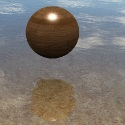<div class="contentDiv41 itemContent"><div class="contentDivPlaygrond" onclick="loadMobile('#L76FB1#0')"><h3 class="itemLineChild" onclick="loadMobile('#L76FB1#0')">Water</h3><p class="itemLineChild">Water material</p></div><a class="itemLineChildLink childLink" href="https://doc.babylonjs.com/extensions/water" target="_blank">Documentation</a><a class="itemLineChildLink childLink" href="https://playground.babylonjs.com/frame.html#L76FB1#0" target="_blank" id="PGlink_#L76FB1#0">Playground</a></div></div><div class="itemLine X-ray material with Fresnel contentBlock" id="42" onclick="load('#GK7FK#0','42')"><div class="contentDiv42 itemContent"><div class="contentDivPlaygrond" onclick="loadMobile('#GK7FK#0')"><h3 class="itemLineChild" onclick="loadMobile('#GK7FK#0')">X-ray material with Fresnel</h3><p class="itemLineChild">Use fresnel parameters to simulate an x-ray effect</p></div><a class="itemLineChildLink childLink" href="https://doc.babylonjs.com/how_to/how_to_use_fresnelparameters" target="_blank">Documentation</a><a class="itemLineChildLink childLink" href="https://playground.babylonjs.com/frame.html#GK7FK#0" target="_blank" id="PGlink_#GK7FK#0">Playground</a></div></div></p></div><div class="categoryContainer"><p>Meshes<div class="itemLine Basic elements contentBlock" id="43" onclick="load('#A1210C#0','43')">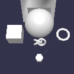<div class="contentDiv43 itemContent"><div class="contentDivPlaygrond" onclick="loadMobile('#A1210C#0')"><h3 class="itemLineChild" onclick="loadMobile('#A1210C#0')">Basic elements</h3><p class="itemLineChild">Ball, box, plane, line, etc</p></div><a class="itemLineChildLink childLink" href="https://doc.babylonjs.com/how_to/set_shapes" target="_blank">Documentation</a><a class="itemLineChildLink childLink" href="https://playground.babylonjs.com/frame.html#A1210C#0" target="_blank" id="PGlink_#A1210C#0">Playground</a></div></div><div class="itemLine Basic scene contentBlock" id="44" onclick="load('#TAZ2CB#0','44')"><div class="contentDiv44 itemContent"><div class="contentDivPlaygrond" onclick="loadMobile('#TAZ2CB#0')"><h3 class="itemLineChild" onclick="loadMobile('#TAZ2CB#0')">Basic scene</h3><p class="itemLineChild">Ball and plane</p></div><a class="itemLineChildLink childLink" href="https://doc.babylonjs.com/features/scene" target="_blank">Documentation</a><a class="itemLineChildLink childLink" href="https://playground.babylonjs.com/frame.html#TAZ2CB#0" target="_blank" id="PGlink_#TAZ2CB#0">Playground</a></div></div><div class="itemLine Constructive solid geometries contentBlock" id="45" onclick="load('#T6NP3F#0','45')">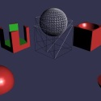<div class="contentDiv45 itemContent"><div class="contentDivPlaygrond" onclick="loadMobile('#T6NP3F#0')"><h3 class="itemLineChild" onclick="loadMobile('#T6NP3F#0')">Constructive solid geometries</h3><p class="itemLineChild">Use boolean operations on meshes using CSG</p></div><a class="itemLineChildLink childLink" href="https://doc.babylonjs.com/api/classes/babylon.csg.html" target="_blank">Documentation</a><a class="itemLineChildLink childLink" href="https://playground.babylonjs.com/frame.html#T6NP3F#0" target="_blank" id="PGlink_#T6NP3F#0">Playground</a></div></div><div class="itemLine Curved lines contentBlock" id="46" onclick="load('#7SQDY#1','46')">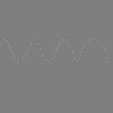<div class="contentDiv46 itemContent"><div class="contentDivPlaygrond" onclick="loadMobile('#7SQDY#1')"><h3 class="itemLineChild" onclick="loadMobile('#7SQDY#1')">Curved lines</h3><p class="itemLineChild">Use Path3D to create a curved line</p></div><a class="itemLineChildLink childLink" href="https://doc.babylonjs.com/how_to/how_to_use_path3d" target="_blank">Documentation</a><a class="itemLineChildLink childLink" href="https://playground.babylonjs.com/frame.html#7SQDY#1" target="_blank" id="PGlink_#7SQDY#1">Playground</a></div></div><div class="itemLine Decals contentBlock" id="47" onclick="load('#EEUVTY#0','47')"><div class="contentDiv47 itemContent"><div class="contentDivPlaygrond" onclick="loadMobile('#EEUVTY#0')"><h3 class="itemLineChild" onclick="loadMobile('#EEUVTY#0')">Decals</h3><p class="itemLineChild">Create decals to apply additional textures to a portion of a mesh</p></div><a class="itemLineChildLink childLink" href="https://doc.babylonjs.com/how_to/decals" target="_blank">Documentation</a><a class="itemLineChildLink childLink" href="https://playground.babylonjs.com/frame.html#EEUVTY#0" target="_blank" id="PGlink_#EEUVTY#0">Playground</a></div></div><div class="itemLine Displacement map (CPU) contentBlock" id="48" onclick="load('#04JDPF#0','48')"><div class="contentDiv48 itemContent"><div class="contentDivPlaygrond" onclick="loadMobile('#04JDPF#0')"><h3 class="itemLineChild" onclick="loadMobile('#04JDPF#0')">Displacement map (CPU)</h3><p class="itemLineChild">Update mesh geometry using a displacement map (CPU)</p></div><a class="itemLineChildLink childLink" href="https://doc.babylonjs.com/api/classes/babylon.mesh.html#applydisplacementmap" target="_blank">Documentation</a><a class="itemLineChildLink childLink" href="https://playground.babylonjs.com/frame.html#04JDPF#0" target="_blank" id="PGlink_#04JDPF#0">Playground</a></div></div><div class="itemLine Extrude polygon contentBlock" id="49" onclick="load('#TFLTJJ#184','49')">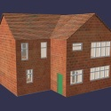<div class="contentDiv49 itemContent"><div class="contentDivPlaygrond" onclick="loadMobile('#TFLTJJ#184')"><h3 class="itemLineChild" onclick="loadMobile('#TFLTJJ#184')">Extrude polygon</h3><p class="itemLineChild">Use MeshBuilder to generate geometry from extruded data</p></div><a class="itemLineChildLink childLink" href="https://doc.babylonjs.com/api/classes/babylon.meshbuilder#extrudepolygon" target="_blank">Documentation</a><a class="itemLineChildLink childLink" href="https://playground.babylonjs.com/frame.html#TFLTJJ#184" target="_blank" id="PGlink_#TFLTJJ#184">Playground</a></div></div><div class="itemLine Height map contentBlock" id="50" onclick="load('#95PXRY#0','50')">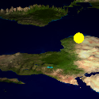<div class="contentDiv50 itemContent"><div class="contentDivPlaygrond" onclick="loadMobile('#95PXRY#0')"><h3 class="itemLineChild" onclick="loadMobile('#95PXRY#0')">Height map</h3><p class="itemLineChild">Use a height map to extrude a plane to create mountains</p></div><a class="itemLineChildLink childLink" href="https://doc.babylonjs.com/babylon101/height_map" target="_blank">Documentation</a><a class="itemLineChildLink childLink" href="https://playground.babylonjs.com/frame.html#95PXRY#0" target="_blank" id="PGlink_#95PXRY#0">Playground</a></div></div><div class="itemLine Look at contentBlock" id="51" onclick="load('#N2K3ZN#0','51')">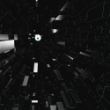<div class="contentDiv51 itemContent"><div class="contentDivPlaygrond" onclick="loadMobile('#N2K3ZN#0')"><h3 class="itemLineChild" onclick="loadMobile('#N2K3ZN#0')">Look at</h3><p class="itemLineChild">Use lookAt() function to align meshes on a specific target</p></div><a class="itemLineChildLink childLink" href="https://doc.babylonjs.com/api/classes/babylon.abstractmesh#lookat" target="_blank">Documentation</a><a class="itemLineChildLink childLink" href="https://playground.babylonjs.com/frame.html#N2K3ZN#0" target="_blank" id="PGlink_#N2K3ZN#0">Playground</a></div></div><div class="itemLine Polygon mesh contentBlock" id="52" onclick="load('#0TQAQU#0','52')"><div class="contentDiv52 itemContent"><div class="contentDivPlaygrond" onclick="loadMobile('#0TQAQU#0')"><h3 class="itemLineChild" onclick="loadMobile('#0TQAQU#0')">Polygon mesh</h3><p class="itemLineChild">Use PolygonMeshBuilder to create meshes from polygon data</p></div><a class="itemLineChildLink childLink" href="https://doc.babylonjs.com/how_to/polygonmeshbuilder" target="_blank">Documentation</a><a class="itemLineChildLink childLink" href="https://playground.babylonjs.com/frame.html#0TQAQU#0" target="_blank" id="PGlink_#0TQAQU#0">Playground</a></div></div><div class="itemLine Raycast on height map contentBlock" id="53" onclick="load('#QM57B#0','53')"><div class="contentDiv53 itemContent"><div class="contentDivPlaygrond" onclick="loadMobile('#QM57B#0')"><h3 class="itemLineChild" onclick="loadMobile('#QM57B#0')">Raycast on height map</h3><p class="itemLineChild">Raycast to find positions on a heightmap</p></div><a class="itemLineChildLink childLink" href="https://doc.babylonjs.com/babylon101/raycasts" target="_blank">Documentation</a><a class="itemLineChildLink childLink" href="https://playground.babylonjs.com/frame.html#QM57B#0" target="_blank" id="PGlink_#QM57B#0">Playground</a></div></div><div class="itemLine Render lines contentBlock" id="54" onclick="load('#SVZL1I#0','54')"><div class="contentDiv54 itemContent"><div class="contentDivPlaygrond" onclick="loadMobile('#SVZL1I#0')"><h3 class="itemLineChild" onclick="loadMobile('#SVZL1I#0')">Render lines</h3><p class="itemLineChild">Use LinesMesh to render lines in 3D</p></div><a class="itemLineChildLink childLink" href="https://doc.babylonjs.com/babylon101/Parametric_Shapes#lines" target="_blank">Documentation</a><a class="itemLineChildLink childLink" href="https://playground.babylonjs.com/frame.html#SVZL1I#0" target="_blank" id="PGlink_#SVZL1I#0">Playground</a></div></div><div class="itemLine Ribbons contentBlock" id="55" onclick="load('#29BR2V#1','55')"><div class="contentDiv55 itemContent"><div class="contentDivPlaygrond" onclick="loadMobile('#29BR2V#1')"><h3 class="itemLineChild" onclick="loadMobile('#29BR2V#1')">Ribbons</h3><p class="itemLineChild">Use ribbons to create complex meshes</p></div><a class="itemLineChildLink childLink" href="https://doc.babylonjs.com/how_to/ribbon_tutorial" target="_blank">Documentation</a><a class="itemLineChildLink childLink" href="https://playground.babylonjs.com/frame.html#29BR2V#1" target="_blank" id="PGlink_#29BR2V#1">Playground</a></div></div><div class="itemLine Rotating mesh to look at a target contentBlock" id="56" onclick="load('#23M0G6#1','56')">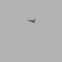<div class="contentDiv56 itemContent"><div class="contentDivPlaygrond" onclick="loadMobile('#23M0G6#1')"><h3 class="itemLineChild" onclick="loadMobile('#23M0G6#1')">Rotating mesh to look at a target</h3><p class="itemLineChild">Make a mesh face towards where the pointer hit a plane</p></div><a class="itemLineChildLink childLink" href="https://doc.babylonjs.com/babylon101/position" target="_blank">Documentation</a><a class="itemLineChildLink childLink" href="https://playground.babylonjs.com/frame.html#23M0G6#1" target="_blank" id="PGlink_#23M0G6#1">Playground</a></div></div><div class="itemLine Rotation and scaling contentBlock" id="57" onclick="load('#CURCZC#0','57')">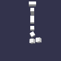<div class="contentDiv57 itemContent"><div class="contentDivPlaygrond" onclick="loadMobile('#CURCZC#0')"><h3 class="itemLineChild" onclick="loadMobile('#CURCZC#0')">Rotation and scaling</h3><p class="itemLineChild">Position mesh layout in space</p></div><a class="itemLineChildLink childLink" href="https://doc.babylonjs.com/how_to/rotate" target="_blank">Documentation</a><a class="itemLineChildLink childLink" href="https://playground.babylonjs.com/frame.html#CURCZC#0" target="_blank" id="PGlink_#CURCZC#0">Playground</a></div></div></p></div><div class="categoryContainer"><p>Optimizations<div class="itemLine Clip planes contentBlock" id="58" onclick="load('#Y6W087#0','58')">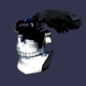<div class="contentDiv58 itemContent"><div class="contentDivPlaygrond" onclick="loadMobile('#Y6W087#0')"><h3 class="itemLineChild" onclick="loadMobile('#Y6W087#0')">Clip planes</h3><p class="itemLineChild">You can clip the rendering of a scene by using clip planes</p></div><a class="itemLineChildLink childLink" href="https://doc.babylonjs.com/how_to/clip_planes" target="_blank">Documentation</a><a class="itemLineChildLink childLink" href="https://playground.babylonjs.com/frame.html#Y6W087#0" target="_blank" id="PGlink_#Y6W087#0">Playground</a></div></div><div class="itemLine Hardware instancing contentBlock" id="59" onclick="load('#YB006J#75','59')">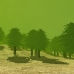<div class="contentDiv59 itemContent"><div class="contentDivPlaygrond" onclick="loadMobile('#YB006J#75')"><h3 class="itemLineChild" onclick="loadMobile('#YB006J#75')">Hardware instancing</h3><p class="itemLineChild">Use hardware instancing to duplicate meshes at no cost</p></div><a class="itemLineChildLink childLink" href="https://doc.babylonjs.com/how_to/how_to_use_instances" target="_blank">Documentation</a><a class="itemLineChildLink childLink" href="https://playground.babylonjs.com/frame.html#YB006J#75" target="_blank" id="PGlink_#YB006J#75">Playground</a></div></div><div class="itemLine Level of detail contentBlock" id="60" onclick="load('#7HMHAU#1','60')">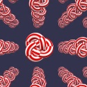<div class="contentDiv60 itemContent"><div class="contentDivPlaygrond" onclick="loadMobile('#7HMHAU#1')"><h3 class="itemLineChild" onclick="loadMobile('#7HMHAU#1')">Level of detail</h3><p class="itemLineChild">Use various meshes based on distance to optimize rendering speed</p></div><a class="itemLineChildLink childLink" href="https://doc.babylonjs.com/how_to/how_to_use_lod" target="_blank">Documentation</a><a class="itemLineChildLink childLink" href="https://playground.babylonjs.com/frame.html#7HMHAU#1" target="_blank" id="PGlink_#7HMHAU#1">Playground</a></div></div><div class="itemLine Octrees contentBlock" id="61" onclick="load('#3YFJ5R#0','61')">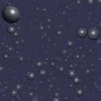<div class="contentDiv61 itemContent"><div class="contentDivPlaygrond" onclick="loadMobile('#3YFJ5R#0')"><h3 class="itemLineChild" onclick="loadMobile('#3YFJ5R#0')">Octrees</h3><p class="itemLineChild">Use octrees to boost mesh selections when dealing with thousands of objects</p></div><a class="itemLineChildLink childLink" href="https://doc.babylonjs.com/how_to/optimizing_your_scene_with_octrees" target="_blank">Documentation</a><a class="itemLineChildLink childLink" href="https://playground.babylonjs.com/frame.html#3YFJ5R#0" target="_blank" id="PGlink_#3YFJ5R#0">Playground</a></div></div></p></div><div class="categoryContainer"><p>Particles<div class="itemLine A lot of triangles with SPS contentBlock" id="62" onclick="load('#2FPT1A#5','62')">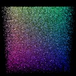<div class="contentDiv62 itemContent"><div class="contentDivPlaygrond" onclick="loadMobile('#2FPT1A#5')"><h3 class="itemLineChild" onclick="loadMobile('#2FPT1A#5')">A lot of triangles with SPS</h3><p class="itemLineChild">Use solid particle system to create a colorful cube</p></div><a class="itemLineChildLink childLink" href="https://doc.babylonjs.com/how_to/solid_particles" target="_blank">Documentation</a><a class="itemLineChildLink childLink" href="https://playground.babylonjs.com/frame.html#2FPT1A#5" target="_blank" id="PGlink_#2FPT1A#5">Playground</a></div></div><div class="itemLine GPU particles contentBlock" id="63" onclick="load('#PU4WYI#14','63')">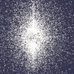<div class="contentDiv63 itemContent"><div class="contentDivPlaygrond" onclick="loadMobile('#PU4WYI#14')"><h3 class="itemLineChild" onclick="loadMobile('#PU4WYI#14')">GPU particles</h3><p class="itemLineChild">Use GPU only to create a massive number of particles</p></div><a class="itemLineChildLink childLink" href="https://doc.babylonjs.com/babylon101/particles#gpu-particles" target="_blank">Documentation</a><a class="itemLineChildLink childLink" href="https://playground.babylonjs.com/frame.html#PU4WYI#14" target="_blank" id="PGlink_#PU4WYI#14">Playground</a></div></div><div class="itemLine Low lying fog contentBlock" id="64" onclick="load('#BHNVUE#2','64')"><div class="contentDiv64 itemContent"><div class="contentDivPlaygrond" onclick="loadMobile('#BHNVUE#2')"><h3 class="itemLineChild" onclick="loadMobile('#BHNVUE#2')">Low lying fog</h3><p class="itemLineChild">Use particle to simulate volumetric fog</p></div><a class="itemLineChildLink childLink" href="https://doc.babylonjs.com/babylon101/particles" target="_blank">Documentation</a><a class="itemLineChildLink childLink" href="https://playground.babylonjs.com/frame.html#BHNVUE#2" target="_blank" id="PGlink_#BHNVUE#2">Playground</a></div></div><div class="itemLine Particle editor contentBlock" id="65" onclick="load('#NNL67B#1','65')"><div class="contentDiv65 itemContent"><div class="contentDivPlaygrond" onclick="loadMobile('#NNL67B#1')"><h3 class="itemLineChild" onclick="loadMobile('#NNL67B#1')">Particle editor</h3><p class="itemLineChild">Online editor to play with particle parameters</p></div><a class="itemLineChildLink childLink" href="https://doc.babylonjs.com/babylon101/particles" target="_blank">Documentation</a><a class="itemLineChildLink childLink" href="https://playground.babylonjs.com/frame.html#NNL67B#1" target="_blank" id="PGlink_#NNL67B#1">Playground</a></div></div><div class="itemLine Particle helper contentBlock" id="66" onclick="load('#1VGT5D#2','66')"><div class="contentDiv66 itemContent"><div class="contentDivPlaygrond" onclick="loadMobile('#1VGT5D#2')"><h3 class="itemLineChild" onclick="loadMobile('#1VGT5D#2')">Particle helper</h3><p class="itemLineChild">Easily create complex particle systems</p></div><a class="itemLineChildLink childLink" href="https://doc.babylonjs.com/how_to/particlehelper" target="_blank">Documentation</a><a class="itemLineChildLink childLink" href="https://playground.babylonjs.com/frame.html#1VGT5D#2" target="_blank" id="PGlink_#1VGT5D#2">Playground</a></div></div><div class="itemLine Particle sub emitters contentBlock" id="67" onclick="load('#T0L01N#50','67')">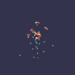<div class="contentDiv67 itemContent"><div class="contentDivPlaygrond" onclick="loadMobile('#T0L01N#50')"><h3 class="itemLineChild" onclick="loadMobile('#T0L01N#50')">Particle sub emitters</h3><p class="itemLineChild">Spawn particles from another particle as it moves or when it dies</p></div><a class="itemLineChildLink childLink" href="https://doc.babylonjs.com/how_to/sub_emitters" target="_blank">Documentation</a><a class="itemLineChildLink childLink" href="https://playground.babylonjs.com/frame.html#T0L01N#50" target="_blank" id="PGlink_#T0L01N#50">Playground</a></div></div><div class="itemLine Particles 101 contentBlock" id="68" onclick="load('#EF9X5R#0','68')"><div class="contentDiv68 itemContent"><div class="contentDivPlaygrond" onclick="loadMobile('#EF9X5R#0')"><h3 class="itemLineChild" onclick="loadMobile('#EF9X5R#0')">Particles 101</h3><p class="itemLineChild">Create a particle system and attach it to a moving object</p></div><a class="itemLineChildLink childLink" href="https://doc.babylonjs.com/babylon101/particles" target="_blank">Documentation</a><a class="itemLineChildLink childLink" href="https://playground.babylonjs.com/frame.html#EF9X5R#0" target="_blank" id="PGlink_#EF9X5R#0">Playground</a></div></div><div class="itemLine Particles and mirrors contentBlock" id="69" onclick="load('#65MUMZ#1','69')"><div class="contentDiv69 itemContent"><div class="contentDivPlaygrond" onclick="loadMobile('#65MUMZ#1')"><h3 class="itemLineChild" onclick="loadMobile('#65MUMZ#1')">Particles and mirrors</h3><p class="itemLineChild">Use particles with a mirror</p></div><a class="itemLineChildLink childLink" href="https://doc.babylonjs.com/babylon101/particles" target="_blank">Documentation</a><a class="itemLineChildLink childLink" href="https://playground.babylonjs.com/frame.html#65MUMZ#1" target="_blank" id="PGlink_#65MUMZ#1">Playground</a></div></div><div class="itemLine Particles and node material contentBlock" id="70" onclick="load('#RA18GJ#0','70')"><div class="contentDiv70 itemContent"><div class="contentDivPlaygrond" onclick="loadMobile('#RA18GJ#0')"><h3 class="itemLineChild" onclick="loadMobile('#RA18GJ#0')">Particles and node material</h3><p class="itemLineChild">Updating default particle shader with NME</p></div><a class="itemLineChildLink childLink" href="https://doc.babylonjs.com/How_To/Particles_and_nme" target="_blank">Documentation</a><a class="itemLineChildLink childLink" href="https://playground.babylonjs.com/frame.html#RA18GJ#0" target="_blank" id="PGlink_#RA18GJ#0">Playground</a></div></div><div class="itemLine Particles with custom shader contentBlock" id="71" onclick="load('#807QEP#0','71')"><div class="contentDiv71 itemContent"><div class="contentDivPlaygrond" onclick="loadMobile('#807QEP#0')"><h3 class="itemLineChild" onclick="loadMobile('#807QEP#0')">Particles with custom shader</h3><p class="itemLineChild">Use custom shader to display CPU particles</p></div><a class="itemLineChildLink childLink" href="https://doc.babylonjs.com/how_to/customise#custom-effects" target="_blank">Documentation</a><a class="itemLineChildLink childLink" href="https://playground.babylonjs.com/frame.html#807QEP#0" target="_blank" id="PGlink_#807QEP#0">Playground</a></div></div><div class="itemLine Solid Particle System and shadows contentBlock" id="72" onclick="load('#ML2LR9#0','72')">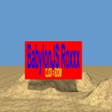<div class="contentDiv72 itemContent"><div class="contentDivPlaygrond" onclick="loadMobile('#ML2LR9#0')"><h3 class="itemLineChild" onclick="loadMobile('#ML2LR9#0')">Solid Particle System and shadows</h3><p class="itemLineChild">Animate SPS with realtime shadows</p></div><a class="itemLineChildLink childLink" href="https://doc.babylonjs.com/how_to/solid_particles" target="_blank">Documentation</a><a class="itemLineChildLink childLink" href="https://playground.babylonjs.com/frame.html#ML2LR9#0" target="_blank" id="PGlink_#ML2LR9#0">Playground</a></div></div><div class="itemLine Solid Particle System collisions contentBlock" id="73" onclick="load('#2V1C4Z#0','73')">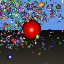<div class="contentDiv73 itemContent"><div class="contentDivPlaygrond" onclick="loadMobile('#2V1C4Z#0')"><h3 class="itemLineChild" onclick="loadMobile('#2V1C4Z#0')">Solid Particle System collisions</h3><p class="itemLineChild">Use basic geometry to simulate SPS collisions</p></div><a class="itemLineChildLink childLink" href="https://doc.babylonjs.com/how_to/solid_particles" target="_blank">Documentation</a><a class="itemLineChildLink childLink" href="https://playground.babylonjs.com/frame.html#2V1C4Z#0" target="_blank" id="PGlink_#2V1C4Z#0">Playground</a></div></div><div class="itemLine Solid Particle System facet collision contentBlock" id="74" onclick="load('#6UZDJ9#0','74')"><div class="contentDiv74 itemContent"><div class="contentDivPlaygrond" onclick="loadMobile('#6UZDJ9#0')"><h3 class="itemLineChild" onclick="loadMobile('#6UZDJ9#0')">Solid Particle System facet collision</h3><p class="itemLineChild">Use SPS facets to simulate complex mesh collisions</p></div><a class="itemLineChildLink childLink" href="https://doc.babylonjs.com/how_to/solid_particles" target="_blank">Documentation</a><a class="itemLineChildLink childLink" href="https://playground.babylonjs.com/frame.html#6UZDJ9#0" target="_blank" id="PGlink_#6UZDJ9#0">Playground</a></div></div></p></div><div class="categoryContainer"><p>Collisions & intersections<div class="itemLine Collisions contentBlock" id="75" onclick="load('#U8MEB0#0','75')">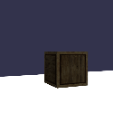<div class="contentDiv75 itemContent"><div class="contentDivPlaygrond" onclick="loadMobile('#U8MEB0#0')"><h3 class="itemLineChild" onclick="loadMobile('#U8MEB0#0')">Collisions</h3><p class="itemLineChild">Handle basic collisions to avoid a camera going through a box</p></div><a class="itemLineChildLink childLink" href="https://doc.babylonjs.com/babylon101/cameras,_mesh_collisions_and_gravity" target="_blank">Documentation</a><a class="itemLineChildLink childLink" href="https://playground.babylonjs.com/frame.html#U8MEB0#0" target="_blank" id="PGlink_#U8MEB0#0">Playground</a></div></div><div class="itemLine Intersections contentBlock" id="76" onclick="load('#KQV9SA#0','76')">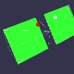<div class="contentDiv76 itemContent"><div class="contentDivPlaygrond" onclick="loadMobile('#KQV9SA#0')"><h3 class="itemLineChild" onclick="loadMobile('#KQV9SA#0')">Intersections</h3><p class="itemLineChild">Detect when meshes intersect each other</p></div><a class="itemLineChildLink childLink" href="https://doc.babylonjs.com/babylon101/intersect_collisions_-_mesh" target="_blank">Documentation</a><a class="itemLineChildLink childLink" href="https://playground.babylonjs.com/frame.html#KQV9SA#0" target="_blank" id="PGlink_#KQV9SA#0">Playground</a></div></div></p></div><div class="categoryContainer"><p>Physics<div class="itemLine Cloth contentBlock" id="77" onclick="load('#7N1BRU#0','77')"><div class="contentDiv77 itemContent"><div class="contentDivPlaygrond" onclick="loadMobile('#7N1BRU#0')"><h3 class="itemLineChild" onclick="loadMobile('#7N1BRU#0')">Cloth</h3><p class="itemLineChild">Use physic engine to simulate cloth</p></div><a class="itemLineChildLink childLink" href="https://doc.babylonjs.com/how_to/using_the_physics_engine" target="_blank">Documentation</a><a class="itemLineChildLink childLink" href="https://playground.babylonjs.com/frame.html#7N1BRU#0" target="_blank" id="PGlink_#7N1BRU#0">Playground</a></div></div><div class="itemLine Physics contentBlock" id="78" onclick="load('#7149G4#0','78')">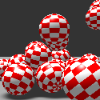<div class="contentDiv78 itemContent"><div class="contentDivPlaygrond" onclick="loadMobile('#7149G4#0')"><h3 class="itemLineChild" onclick="loadMobile('#7149G4#0')">Physics</h3><p class="itemLineChild">How to use physic engines within Babylon</p></div><a class="itemLineChildLink childLink" href="https://doc.babylonjs.com/how_to/using_the_physics_engine" target="_blank">Documentation</a><a class="itemLineChildLink childLink" href="https://playground.babylonjs.com/frame.html#7149G4#0" target="_blank" id="PGlink_#7149G4#0">Playground</a></div></div></p></div><div class="categoryContainer"><p>Shadows<div class="itemLine Contact hardening contentBlock" id="79" onclick="load('#EYEPRI#3','79')"><div class="contentDiv79 itemContent"><div class="contentDivPlaygrond" onclick="loadMobile('#EYEPRI#3')"><h3 class="itemLineChild" onclick="loadMobile('#EYEPRI#3')">Contact hardening</h3><p class="itemLineChild">Shadows will get softer when they are further away from the object casting them</p></div><a class="itemLineChildLink childLink" href="https://doc.babylonjs.com/babylon101/shadows#contact-hardening-shadow-webgl2-only" target="_blank">Documentation</a><a class="itemLineChildLink childLink" href="https://playground.babylonjs.com/frame.html#EYEPRI#3" target="_blank" id="PGlink_#EYEPRI#3">Playground</a></div></div><div class="itemLine Different shadow filters contentBlock" id="80" onclick="load('#43T193#0','80')"><div class="contentDiv80 itemContent"><div class="contentDivPlaygrond" onclick="loadMobile('#43T193#0')"><h3 class="itemLineChild" onclick="loadMobile('#43T193#0')">Different shadow filters</h3><p class="itemLineChild">Demonstrate different kind of shadows</p></div><a class="itemLineChildLink childLink" href="https://doc.babylonjs.com/babylon101/shadows" target="_blank">Documentation</a><a class="itemLineChildLink childLink" href="https://playground.babylonjs.com/frame.html#43T193#0" target="_blank" id="PGlink_#43T193#0">Playground</a></div></div><div class="itemLine Multi directional lights with soft shadows contentBlock" id="81" onclick="load('#KWS7KD#0','81')">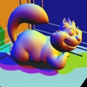<div class="contentDiv81 itemContent"><div class="contentDivPlaygrond" onclick="loadMobile('#KWS7KD#0')"><h3 class="itemLineChild" onclick="loadMobile('#KWS7KD#0')">Multi directional lights with soft shadows</h3><p class="itemLineChild">Use multiple directional lights to cast soft shadows</p></div><a class="itemLineChildLink childLink" href="https://doc.babylonjs.com/babylon101/shadows" target="_blank">Documentation</a><a class="itemLineChildLink childLink" href="https://playground.babylonjs.com/frame.html#KWS7KD#0" target="_blank" id="PGlink_#KWS7KD#0">Playground</a></div></div><div class="itemLine Point light shadows contentBlock" id="82" onclick="load('#4MC650#0','82')"><div class="contentDiv82 itemContent"><div class="contentDivPlaygrond" onclick="loadMobile('#4MC650#0')"><h3 class="itemLineChild" onclick="loadMobile('#4MC650#0')">Point light shadows</h3><p class="itemLineChild">Use point light to cast shadows</p></div><a class="itemLineChildLink childLink" href="https://doc.babylonjs.com/babylon101/shadows" target="_blank">Documentation</a><a class="itemLineChildLink childLink" href="https://playground.babylonjs.com/frame.html#4MC650#0" target="_blank" id="PGlink_#4MC650#0">Playground</a></div></div><div class="itemLine Self shadowing #1 contentBlock" id="83" onclick="load('#F4XWU2#0','83')"><div class="contentDiv83 itemContent"><div class="contentDivPlaygrond" onclick="loadMobile('#F4XWU2#0')"><h3 class="itemLineChild" onclick="loadMobile('#F4XWU2#0')">Self shadowing #1</h3><p class="itemLineChild">Use shadow exponential mode to enable self shadowing on a rotating object</p></div><a class="itemLineChildLink childLink" href="https://doc.babylonjs.com/babylon101/shadows#exponential-shadow-map" target="_blank">Documentation</a><a class="itemLineChildLink childLink" href="https://playground.babylonjs.com/frame.html#F4XWU2#0" target="_blank" id="PGlink_#F4XWU2#0">Playground</a></div></div><div class="itemLine Self shadowing #2 contentBlock" id="84" onclick="load('#4GAHX6#14','84')"><div class="contentDiv84 itemContent"><div class="contentDivPlaygrond" onclick="loadMobile('#4GAHX6#14')"><h3 class="itemLineChild" onclick="loadMobile('#4GAHX6#14')">Self shadowing #2</h3><p class="itemLineChild">Use shadow close exponential mode to enable self shadowing on animated object</p></div><a class="itemLineChildLink childLink" href="https://doc.babylonjs.com/babylon101/shadows#close-exponential-shadow-map" target="_blank">Documentation</a><a class="itemLineChildLink childLink" href="https://playground.babylonjs.com/frame.html#4GAHX6#14" target="_blank" id="PGlink_#4GAHX6#14">Playground</a></div></div><div class="itemLine Shadow on transparent textures contentBlock" id="85" onclick="load('#2DT16W#11','85')"><div class="contentDiv85 itemContent"><div class="contentDivPlaygrond" onclick="loadMobile('#2DT16W#11')"><h3 class="itemLineChild" onclick="loadMobile('#2DT16W#11')">Shadow on transparent textures</h3><p class="itemLineChild">Create realistic shadows from a transparent texture</p></div><a class="itemLineChildLink childLink" href="https://doc.babylonjs.com/babylon101/shadows" target="_blank">Documentation</a><a class="itemLineChildLink childLink" href="https://playground.babylonjs.com/frame.html#2DT16W#11" target="_blank" id="PGlink_#2DT16W#11">Playground</a></div></div><div class="itemLine Shadows 101 contentBlock" id="86" onclick="load('#IFYDRS#0','86')"><div class="contentDiv86 itemContent"><div class="contentDivPlaygrond" onclick="loadMobile('#IFYDRS#0')"><h3 class="itemLineChild" onclick="loadMobile('#IFYDRS#0')">Shadows 101</h3><p class="itemLineChild">Setup a scene with lights and meshes to cast different types of shadows</p></div><a class="itemLineChildLink childLink" href="https://doc.babylonjs.com/babylon101/shadows" target="_blank">Documentation</a><a class="itemLineChildLink childLink" href="https://playground.babylonjs.com/frame.html#IFYDRS#0" target="_blank" id="PGlink_#IFYDRS#0">Playground</a></div></div></p></div><div class="categoryContainer"><p>Audio<div class="itemLine Audio analyzer #1 contentBlock" id="87" onclick="load('#TUR5GH#0','87')"><div class="contentDiv87 itemContent"><div class="contentDivPlaygrond" onclick="loadMobile('#TUR5GH#0')"><h3 class="itemLineChild" onclick="loadMobile('#TUR5GH#0')">Audio analyzer #1</h3><p class="itemLineChild">Analyze audio frequencies in realtime</p></div><a class="itemLineChildLink childLink" href="https://doc.babylonjs.com/how_to/playing_sounds_and_music#using-the-analyser" target="_blank">Documentation</a><a class="itemLineChildLink childLink" href="https://playground.babylonjs.com/frame.html#TUR5GH#0" target="_blank" id="PGlink_#TUR5GH#0">Playground</a></div></div><div class="itemLine Basic sounds contentBlock" id="88" onclick="load('#DXAEUY#0','88')"><div class="contentDiv88 itemContent"><div class="contentDivPlaygrond" onclick="loadMobile('#DXAEUY#0')"><h3 class="itemLineChild" onclick="loadMobile('#DXAEUY#0')">Basic sounds</h3><p class="itemLineChild">Playing sounds with babylon</p></div><a class="itemLineChildLink childLink" href="https://doc.babylonjs.com/how_to/playing_sounds_and_music" target="_blank">Documentation</a><a class="itemLineChildLink childLink" href="https://playground.babylonjs.com/frame.html#DXAEUY#0" target="_blank" id="PGlink_#DXAEUY#0">Playground</a></div></div><div class="itemLine Sound on mesh contentBlock" id="89" onclick="load('#EDVU95#0','89')"><div class="contentDiv89 itemContent"><div class="contentDivPlaygrond" onclick="loadMobile('#EDVU95#0')"><h3 class="itemLineChild" onclick="loadMobile('#EDVU95#0')">Sound on mesh</h3><p class="itemLineChild">Attach a sound to a mesh which will be modified by the objects position</p></div><a class="itemLineChildLink childLink" href="https://doc.babylonjs.com/how_to/playing_sounds_and_music" target="_blank">Documentation</a><a class="itemLineChildLink childLink" href="https://playground.babylonjs.com/frame.html#EDVU95#0" target="_blank" id="PGlink_#EDVU95#0">Playground</a></div></div></p></div><div class="categoryContainer"><p>Special FX<div class="itemLine Color curves contentBlock" id="90" onclick="load('#HI65FJ#0','90')"><div class="contentDiv90 itemContent"><div class="contentDivPlaygrond" onclick="loadMobile('#HI65FJ#0')"><h3 class="itemLineChild" onclick="loadMobile('#HI65FJ#0')">Color curves</h3><p class="itemLineChild">Apply color curves to your rendering</p></div><a class="itemLineChildLink childLink" href="https://doc.babylonjs.com/how_to/how_to_use_postprocesses#imageprocessing" target="_blank">Documentation</a><a class="itemLineChildLink childLink" href="https://playground.babylonjs.com/frame.html#HI65FJ#0" target="_blank" id="PGlink_#HI65FJ#0">Playground</a></div></div><div class="itemLine Convolution post-process contentBlock" id="91" onclick="load('#B0RH9H#1','91')"><div class="contentDiv91 itemContent"><div class="contentDivPlaygrond" onclick="loadMobile('#B0RH9H#1')"><h3 class="itemLineChild" onclick="loadMobile('#B0RH9H#1')">Convolution post-process</h3><p class="itemLineChild">Apply emboss filter to the scene using the ConvolutionPostProcess</p></div><a class="itemLineChildLink childLink" href="https://doc.babylonjs.com/api/classes/babylon.convolutionpostprocess" target="_blank">Documentation</a><a class="itemLineChildLink childLink" href="https://playground.babylonjs.com/frame.html#B0RH9H#1" target="_blank" id="PGlink_#B0RH9H#1">Playground</a></div></div><div class="itemLine Dawn Bringer contentBlock" id="92" onclick="load('#TZJ0HQ#17','92')"><div class="contentDiv92 itemContent"><div class="contentDivPlaygrond" onclick="loadMobile('#TZJ0HQ#17')"><h3 class="itemLineChild" onclick="loadMobile('#TZJ0HQ#17')">Dawn Bringer</h3><p class="itemLineChild">Use custom post process effect to simulate DawnBringer effect</p></div><a class="itemLineChildLink childLink" href="https://doc.babylonjs.com/how_to/how_to_use_postprocesses#custom-postprocesses" target="_blank">Documentation</a><a class="itemLineChildLink childLink" href="https://playground.babylonjs.com/frame.html#TZJ0HQ#17" target="_blank" id="PGlink_#TZJ0HQ#17">Playground</a></div></div><div class="itemLine Default rendering pipeline contentBlock" id="93" onclick="load('#Y3C0HQ#146','93')"><div class="contentDiv93 itemContent"><div class="contentDivPlaygrond" onclick="loadMobile('#Y3C0HQ#146')"><h3 class="itemLineChild" onclick="loadMobile('#Y3C0HQ#146')">Default rendering pipeline</h3><p class="itemLineChild">Bloom, FXAA, sharpen, grain, vignette, chromatic aberration and DoF with one single object</p></div><a class="itemLineChildLink childLink" href="https://doc.babylonjs.com/how_to/using_default_rendering_pipeline" target="_blank">Documentation</a><a class="itemLineChildLink childLink" href="https://playground.babylonjs.com/frame.html#Y3C0HQ#146" target="_blank" id="PGlink_#Y3C0HQ#146">Playground</a></div></div><div class="itemLine Depth of field contentBlock" id="94" onclick="load('#8F5HYV#9','94')"><div class="contentDiv94 itemContent"><div class="contentDivPlaygrond" onclick="loadMobile('#8F5HYV#9')"><h3 class="itemLineChild" onclick="loadMobile('#8F5HYV#9')">Depth of field</h3><p class="itemLineChild">Apply depth of field effect</p></div><a class="itemLineChildLink childLink" href="https://doc.babylonjs.com/how_to/using_default_rendering_pipeline#depth-of-field" target="_blank">Documentation</a><a class="itemLineChildLink childLink" href="https://playground.babylonjs.com/frame.html#8F5HYV#9" target="_blank" id="PGlink_#8F5HYV#9">Playground</a></div></div><div class="itemLine Environment contentBlock" id="95" onclick="load('#7G0IQW#0','95')"><div class="contentDiv95 itemContent"><div class="contentDivPlaygrond" onclick="loadMobile('#7G0IQW#0')"><h3 class="itemLineChild" onclick="loadMobile('#7G0IQW#0')">Environment</h3><p class="itemLineChild">Adding a skybox and fog</p></div><a class="itemLineChildLink childLink" href="https://doc.babylonjs.com/babylon101/environment" target="_blank">Documentation</a><a class="itemLineChildLink childLink" href="https://playground.babylonjs.com/frame.html#7G0IQW#0" target="_blank" id="PGlink_#7G0IQW#0">Playground</a></div></div><div class="itemLine Fog contentBlock" id="96" onclick="load('#LR6389#0','96')"><div class="contentDiv96 itemContent"><div class="contentDivPlaygrond" onclick="loadMobile('#LR6389#0')"><h3 class="itemLineChild" onclick="loadMobile('#LR6389#0')">Fog</h3><p class="itemLineChild">Simulate fog in your scene</p></div><a class="itemLineChildLink childLink" href="https://doc.babylonjs.com/babylon101/Environment#fog" target="_blank">Documentation</a><a class="itemLineChildLink childLink" href="https://playground.babylonjs.com/frame.html#LR6389#0" target="_blank" id="PGlink_#LR6389#0">Playground</a></div></div><div class="itemLine Fresnel contentBlock" id="97" onclick="load('#AQZJ4C#0','97')"><div class="contentDiv97 itemContent"><div class="contentDivPlaygrond" onclick="loadMobile('#AQZJ4C#0')"><h3 class="itemLineChild" onclick="loadMobile('#AQZJ4C#0')">Fresnel</h3><p class="itemLineChild">Renders spheres to simulate a fresnel lens</p></div><a class="itemLineChildLink childLink" href="https://doc.babylonjs.com/how_to/how_to_use_fresnelparameters" target="_blank">Documentation</a><a class="itemLineChildLink childLink" href="https://playground.babylonjs.com/frame.html#AQZJ4C#0" target="_blank" id="PGlink_#AQZJ4C#0">Playground</a></div></div><div class="itemLine Glass wubble ball contentBlock" id="98" onclick="load('#CXOLW#3','98')"><div class="contentDiv98 itemContent"><div class="contentDivPlaygrond" onclick="loadMobile('#CXOLW#3')"><h3 class="itemLineChild" onclick="loadMobile('#CXOLW#3')">Glass wubble ball</h3><p class="itemLineChild">Warped ball effect</p></div><a class="itemLineChildLink childLink" href="https://doc.babylonjs.com/api/classes/babylon.abstractmesh#getverticesdata" target="_blank">Documentation</a><a class="itemLineChildLink childLink" href="https://playground.babylonjs.com/frame.html#CXOLW#3" target="_blank" id="PGlink_#CXOLW#3">Playground</a></div></div><div class="itemLine Glow layer contentBlock" id="99" onclick="load('#6ZVKE3#0','99')"><div class="contentDiv99 itemContent"><div class="contentDivPlaygrond" onclick="loadMobile('#6ZVKE3#0')"><h3 class="itemLineChild" onclick="loadMobile('#6ZVKE3#0')">Glow layer</h3><p class="itemLineChild">Generates glow around emissive objects</p></div><a class="itemLineChildLink childLink" href="https://doc.babylonjs.com/how_to/glow_layer" target="_blank">Documentation</a><a class="itemLineChildLink childLink" href="https://playground.babylonjs.com/frame.html#6ZVKE3#0" target="_blank" id="PGlink_#6ZVKE3#0">Playground</a></div></div><div class="itemLine Heatwave contentBlock" id="100" onclick="load('#TZJ0HQ#18','100')"><div class="contentDiv100 itemContent"><div class="contentDivPlaygrond" onclick="loadMobile('#TZJ0HQ#18')"><h3 class="itemLineChild" onclick="loadMobile('#TZJ0HQ#18')">Heatwave</h3><p class="itemLineChild">Use custom post process effect to simulate heat wave effect</p></div><a class="itemLineChildLink childLink" href="https://doc.babylonjs.com/how_to/how_to_use_postprocesses#custom-postprocesses" target="_blank">Documentation</a><a class="itemLineChildLink childLink" href="https://playground.babylonjs.com/frame.html#TZJ0HQ#18" target="_blank" id="PGlink_#TZJ0HQ#18">Playground</a></div></div><div class="itemLine Highlight layer contentBlock" id="101" onclick="load('#7EESGZ#8','101')"><div class="contentDiv101 itemContent"><div class="contentDivPlaygrond" onclick="loadMobile('#7EESGZ#8')"><h3 class="itemLineChild" onclick="loadMobile('#7EESGZ#8')">Highlight layer</h3><p class="itemLineChild">Highlight a mesh</p></div><a class="itemLineChildLink childLink" href="https://doc.babylonjs.com/how_to/highlight_layer" target="_blank">Documentation</a><a class="itemLineChildLink childLink" href="https://playground.babylonjs.com/frame.html#7EESGZ#8" target="_blank" id="PGlink_#7EESGZ#8">Playground</a></div></div><div class="itemLine Hypnotizing infinite loader contentBlock" id="102" onclick="load('#VUJG1#1','102')"><div class="contentDiv102 itemContent"><div class="contentDivPlaygrond" onclick="loadMobile('#VUJG1#1')"><h3 class="itemLineChild" onclick="loadMobile('#VUJG1#1')">Hypnotizing infinite loader</h3><p class="itemLineChild">Visually apealing loading animation</p></div><a class="itemLineChildLink childLink" href="https://doc.babylonjs.com/babylon101/position" target="_blank">Documentation</a><a class="itemLineChildLink childLink" href="https://playground.babylonjs.com/frame.html#VUJG1#1" target="_blank" id="PGlink_#VUJG1#1">Playground</a></div></div><div class="itemLine Lens effects contentBlock" id="103" onclick="load('#B7JHWD#0','103')"><div class="contentDiv103 itemContent"><div class="contentDivPlaygrond" onclick="loadMobile('#B7JHWD#0')"><h3 class="itemLineChild" onclick="loadMobile('#B7JHWD#0')">Lens effects</h3><p class="itemLineChild">Create photographic effect with the LensRenderingPipeline</p></div><a class="itemLineChildLink childLink" href="https://doc.babylonjs.com/how_to/using_depth-of-field_and_other_lens_effects" target="_blank">Documentation</a><a class="itemLineChildLink childLink" href="https://playground.babylonjs.com/frame.html#B7JHWD#0" target="_blank" id="PGlink_#B7JHWD#0">Playground</a></div></div><div class="itemLine Lens flares contentBlock" id="104" onclick="load('#ZEB7H6#6','104')"><div class="contentDiv104 itemContent"><div class="contentDivPlaygrond" onclick="loadMobile('#ZEB7H6#6')"><h3 class="itemLineChild" onclick="loadMobile('#ZEB7H6#6')">Lens flares</h3><p class="itemLineChild">Simulate lens flares on the camera</p></div><a class="itemLineChildLink childLink" href="https://doc.babylonjs.com/how_to/how_to_use_lens_flares" target="_blank">Documentation</a><a class="itemLineChildLink childLink" href="https://playground.babylonjs.com/frame.html#ZEB7H6#6" target="_blank" id="PGlink_#ZEB7H6#6">Playground</a></div></div><div class="itemLine Motion blur contentBlock" id="105" onclick="load('#ZMAJZB#7','105')"><div class="contentDiv105 itemContent"><div class="contentDivPlaygrond" onclick="loadMobile('#ZMAJZB#7')"><h3 class="itemLineChild" onclick="loadMobile('#ZMAJZB#7')">Motion blur</h3><p class="itemLineChild">Use the standard rendering pipeline to simulate motion blur</p></div><a class="itemLineChildLink childLink" href="https://doc.babylonjs.com/how_to/using_standard_rendering_pipeline#setting-up-the-motion-blur" target="_blank">Documentation</a><a class="itemLineChildLink childLink" href="https://playground.babylonjs.com/frame.html#ZMAJZB#7" target="_blank" id="PGlink_#ZMAJZB#7">Playground</a></div></div><div class="itemLine Portals contentBlock" id="106" onclick="load('#EEOWP#7','106')"><div class="contentDiv106 itemContent"><div class="contentDivPlaygrond" onclick="loadMobile('#EEOWP#7')"><h3 class="itemLineChild" onclick="loadMobile('#EEOWP#7')">Portals</h3><p class="itemLineChild">Portal effect created using custom shaders</p></div><a class="itemLineChildLink childLink" href="https://doc.babylonjs.com/resources/shaderintro" target="_blank">Documentation</a><a class="itemLineChildLink childLink" href="https://playground.babylonjs.com/frame.html#EEOWP#7" target="_blank" id="PGlink_#EEOWP#7">Playground</a></div></div><div class="itemLine RGB Shift Glitch contentBlock" id="107" onclick="load('#TZJ0HQ#19','107')"><div class="contentDiv107 itemContent"><div class="contentDivPlaygrond" onclick="loadMobile('#TZJ0HQ#19')"><h3 class="itemLineChild" onclick="loadMobile('#TZJ0HQ#19')">RGB Shift Glitch</h3><p class="itemLineChild">Use custom post process effect to simulate RGB Shift glitch</p></div><a class="itemLineChildLink childLink" href="https://doc.babylonjs.com/how_to/how_to_use_postprocesses#custom-postprocesses" target="_blank">Documentation</a><a class="itemLineChildLink childLink" href="https://playground.babylonjs.com/frame.html#TZJ0HQ#19" target="_blank" id="PGlink_#TZJ0HQ#19">Playground</a></div></div><div class="itemLine Realtime reflection contentBlock" id="108" onclick="load('#J0D279#0','108')"><div class="contentDiv108 itemContent"><div class="contentDivPlaygrond" onclick="loadMobile('#J0D279#0')"><h3 class="itemLineChild" onclick="loadMobile('#J0D279#0')">Realtime reflection</h3><p class="itemLineChild">use reflection probes to simulate realtime reflection</p></div><a class="itemLineChildLink childLink" href="https://doc.babylonjs.com/how_to/how_to_use_reflection_probes" target="_blank">Documentation</a><a class="itemLineChildLink childLink" href="https://playground.babylonjs.com/frame.html#J0D279#0" target="_blank" id="PGlink_#J0D279#0">Playground</a></div></div><div class="itemLine Realtime refraction contentBlock" id="109" onclick="load('#RRYXWN#1','109')"><div class="contentDiv109 itemContent"><div class="contentDivPlaygrond" onclick="loadMobile('#RRYXWN#1')"><h3 class="itemLineChild" onclick="loadMobile('#RRYXWN#1')">Realtime refraction</h3><p class="itemLineChild">use reflection probes to simulate realtime refraction</p></div><a class="itemLineChildLink childLink" href="https://doc.babylonjs.com/how_to/how_to_use_reflection_probes" target="_blank">Documentation</a><a class="itemLineChildLink childLink" href="https://playground.babylonjs.com/frame.html#RRYXWN#1" target="_blank" id="PGlink_#RRYXWN#1">Playground</a></div></div><div class="itemLine Refraction and Reflection contentBlock" id="110" onclick="load('#XH85A9#0','110')"><div class="contentDiv110 itemContent"><div class="contentDivPlaygrond" onclick="loadMobile('#XH85A9#0')"><h3 class="itemLineChild" onclick="loadMobile('#XH85A9#0')">Refraction and Reflection</h3><p class="itemLineChild">Simulate how light would reflect and refract with a sphere</p></div><a class="itemLineChildLink childLink" href="https://doc.babylonjs.com/how_to/how_to_use_fresnelparameters" target="_blank">Documentation</a><a class="itemLineChildLink childLink" href="https://playground.babylonjs.com/frame.html#XH85A9#0" target="_blank" id="PGlink_#XH85A9#0">Playground</a></div></div><div class="itemLine SSAO rendering pipeline contentBlock" id="111" onclick="load('#N96NXC#0','111')"><div class="contentDiv111 itemContent"><div class="contentDivPlaygrond" onclick="loadMobile('#N96NXC#0')"><h3 class="itemLineChild" onclick="loadMobile('#N96NXC#0')">SSAO rendering pipeline</h3><p class="itemLineChild">Screen space ambient occlusion</p></div><a class="itemLineChildLink childLink" href="https://doc.babylonjs.com/how_to/using_the_ssao_rendering_pipeline" target="_blank">Documentation</a><a class="itemLineChildLink childLink" href="https://playground.babylonjs.com/frame.html#N96NXC#0" target="_blank" id="PGlink_#N96NXC#0">Playground</a></div></div><div class="itemLine SSAO rendering pipeline (WebGL2) contentBlock" id="112" onclick="load('#7D2QDD#0','112')"><div class="contentDiv112 itemContent"><div class="contentDivPlaygrond" onclick="loadMobile('#7D2QDD#0')"><h3 class="itemLineChild" onclick="loadMobile('#7D2QDD#0')">SSAO rendering pipeline (WebGL2)</h3><p class="itemLineChild">Screen space ambient occlusion with WebGL2</p></div><a class="itemLineChildLink childLink" href="https://doc.babylonjs.com/api/classes/babylon.ssao2renderingpipeline" target="_blank">Documentation</a><a class="itemLineChildLink childLink" href="https://playground.babylonjs.com/frame.html#7D2QDD#0" target="_blank" id="PGlink_#7D2QDD#0">Playground</a></div></div><div class="itemLine Sprites contentBlock" id="113" onclick="load('#9RI8CG#0','113')"><div class="contentDiv113 itemContent"><div class="contentDivPlaygrond" onclick="loadMobile('#9RI8CG#0')"><h3 class="itemLineChild" onclick="loadMobile('#9RI8CG#0')">Sprites</h3><p class="itemLineChild">Load and display sprites</p></div><a class="itemLineChildLink childLink" href="https://doc.babylonjs.com/babylon101/sprites" target="_blank">Documentation</a><a class="itemLineChildLink childLink" href="https://playground.babylonjs.com/frame.html#9RI8CG#0" target="_blank" id="PGlink_#9RI8CG#0">Playground</a></div></div><div class="itemLine Volumetric Light Scattering contentBlock" id="114" onclick="load('#V2DAKC#0','114')"><div class="contentDiv114 itemContent"><div class="contentDivPlaygrond" onclick="loadMobile('#V2DAKC#0')"><h3 class="itemLineChild" onclick="loadMobile('#V2DAKC#0')">Volumetric Light Scattering</h3><p class="itemLineChild">Simulates light scattering due to light hitting the atmosphere</p></div><a class="itemLineChildLink childLink" href="https://doc.babylonjs.com/how_to/using_the_volumetric_lightscattering_post-process" target="_blank">Documentation</a><a class="itemLineChildLink childLink" href="https://playground.babylonjs.com/frame.html#V2DAKC#0" target="_blank" id="PGlink_#V2DAKC#0">Playground</a></div></div><div class="itemLine Warp speed ! contentBlock" id="115" onclick="load('#1WBBW0#1','115')"><div class="contentDiv115 itemContent"><div class="contentDivPlaygrond" onclick="loadMobile('#1WBBW0#1')"><h3 class="itemLineChild" onclick="loadMobile('#1WBBW0#1')">Warp speed !</h3><p class="itemLineChild">Fly through stars using a custom shader texture</p></div><a class="itemLineChildLink childLink" href="https://doc.babylonjs.com/how_to/shader_material" target="_blank">Documentation</a><a class="itemLineChildLink childLink" href="https://playground.babylonjs.com/frame.html#1WBBW0#1" target="_blank" id="PGlink_#1WBBW0#1">Playground</a></div></div></p></div><div class="categoryContainer"><p>Textures<div class="itemLine 360 photos contentBlock" id="116" onclick="load('#14KRGG#3','116')"><div class="contentDiv116 itemContent"><div class="contentDivPlaygrond" onclick="loadMobile('#14KRGG#3')"><h3 class="itemLineChild" onclick="loadMobile('#14KRGG#3')">360 photos</h3><p class="itemLineChild">Easily display and control 360 photos</p></div><a class="itemLineChildLink childLink" href="https://doc.babylonjs.com/how_to/360photodome" target="_blank">Documentation</a><a class="itemLineChildLink childLink" href="https://playground.babylonjs.com/frame.html#14KRGG#3" target="_blank" id="PGlink_#14KRGG#3">Playground</a></div></div><div class="itemLine 360 videos contentBlock" id="117" onclick="load('#SQ5UC1#1','117')"><div class="contentDiv117 itemContent"><div class="contentDivPlaygrond" onclick="loadMobile('#SQ5UC1#1')"><h3 class="itemLineChild" onclick="loadMobile('#SQ5UC1#1')">360 videos</h3><p class="itemLineChild">Easily display and control 360 videos</p></div><a class="itemLineChildLink childLink" href="https://doc.babylonjs.com/how_to/360videodome" target="_blank">Documentation</a><a class="itemLineChildLink childLink" href="https://playground.babylonjs.com/frame.html#SQ5UC1#1" target="_blank" id="PGlink_#SQ5UC1#1">Playground</a></div></div><div class="itemLine Basis texture loading contentBlock" id="118" onclick="load('#4RN0VF#0','118')"><div class="contentDiv118 itemContent"><div class="contentDivPlaygrond" onclick="loadMobile('#4RN0VF#0')"><h3 class="itemLineChild" onclick="loadMobile('#4RN0VF#0')">Basis texture loading</h3><p class="itemLineChild">Load a basis texture</p></div><a class="itemLineChildLink childLink" href="https://doc.babylonjs.com/resources/Multi-Platform_Compressed_Textures" target="_blank">Documentation</a><a class="itemLineChildLink childLink" href="https://playground.babylonjs.com/frame.html#4RN0VF#0" target="_blank" id="PGlink_#4RN0VF#0">Playground</a></div></div><div class="itemLine Bump texture contentBlock" id="119" onclick="load('#RK0W5S#30','119')"><div class="contentDiv119 itemContent"><div class="contentDivPlaygrond" onclick="loadMobile('#RK0W5S#30')"><h3 class="itemLineChild" onclick="loadMobile('#RK0W5S#30')">Bump texture</h3><p class="itemLineChild">Use normal map to simulate bump</p></div><a class="itemLineChildLink childLink" href="https://doc.babylonjs.com/how_to/more_materials#bump-map" target="_blank">Documentation</a><a class="itemLineChildLink childLink" href="https://playground.babylonjs.com/frame.html#RK0W5S#30" target="_blank" id="PGlink_#RK0W5S#30">Playground</a></div></div><div class="itemLine Custom render targets contentBlock" id="120" onclick="load('#CJWDJR#1','120')"><div class="contentDiv120 itemContent"><div class="contentDivPlaygrond" onclick="loadMobile('#CJWDJR#1')"><h3 class="itemLineChild" onclick="loadMobile('#CJWDJR#1')">Custom render targets</h3><p class="itemLineChild">Use render target textures to generate procedural data</p></div><a class="itemLineChildLink childLink" href="https://doc.babylonjs.com/api/classes/babylon.rendertargettexture" target="_blank">Documentation</a><a class="itemLineChildLink childLink" href="https://playground.babylonjs.com/frame.html#CJWDJR#1" target="_blank" id="PGlink_#CJWDJR#1">Playground</a></div></div><div class="itemLine Equirectangular map as reflection texture contentBlock" id="121" onclick="load('#23IQHK#2','121')"><div class="contentDiv121 itemContent"><div class="contentDivPlaygrond" onclick="loadMobile('#23IQHK#2')"><h3 class="itemLineChild" onclick="loadMobile('#23IQHK#2')">Equirectangular map as reflection texture</h3><p class="itemLineChild">Using Equirectangular maps as a reflection texture</p></div><a class="itemLineChildLink childLink" href="https://doc.babylonjs.com/how_to/reflect" target="_blank">Documentation</a><a class="itemLineChildLink childLink" href="https://playground.babylonjs.com/frame.html#23IQHK#2" target="_blank" id="PGlink_#23IQHK#2">Playground</a></div></div><div class="itemLine Image texture contentBlock" id="122" onclick="load('#YDO1F#75','122')"><div class="contentDiv122 itemContent"><div class="contentDivPlaygrond" onclick="loadMobile('#YDO1F#75')"><h3 class="itemLineChild" onclick="loadMobile('#YDO1F#75')">Image texture</h3><p class="itemLineChild">Apply an image with transparency to a mesh</p></div><a class="itemLineChildLink childLink" href="https://doc.babylonjs.com/babylon101/materials#transparent-texture-examples" target="_blank">Documentation</a><a class="itemLineChildLink childLink" href="https://playground.babylonjs.com/frame.html#YDO1F#75" target="_blank" id="PGlink_#YDO1F#75">Playground</a></div></div><div class="itemLine Local cubemaps contentBlock" id="123" onclick="load('#RNASML#37','123')"><div class="contentDiv123 itemContent"><div class="contentDivPlaygrond" onclick="loadMobile('#RNASML#37')"><h3 class="itemLineChild" onclick="loadMobile('#RNASML#37')">Local cubemaps</h3><p class="itemLineChild">Improve cubemaps with local mode</p></div><a class="itemLineChildLink childLink" href="https://doc.babylonjs.com/how_to/reflect#cubetexture" target="_blank">Documentation</a><a class="itemLineChildLink childLink" href="https://playground.babylonjs.com/frame.html#RNASML#37" target="_blank" id="PGlink_#RNASML#37">Playground</a></div></div><div class="itemLine Mirrors contentBlock" id="124" onclick="load('#2EP7UB#0','124')"><div class="contentDiv124 itemContent"><div class="contentDivPlaygrond" onclick="loadMobile('#2EP7UB#0')"><h3 class="itemLineChild" onclick="loadMobile('#2EP7UB#0')">Mirrors</h3><p class="itemLineChild">Shows how to use mirrors in babylon</p></div><a class="itemLineChildLink childLink" href="https://doc.babylonjs.com/how_to/reflect" target="_blank">Documentation</a><a class="itemLineChildLink childLink" href="https://playground.babylonjs.com/frame.html#2EP7UB#0" target="_blank" id="PGlink_#2EP7UB#0">Playground</a></div></div><div class="itemLine ProceduralTexture contentBlock" id="125" onclick="load('#B2ZXG6#0','125')"><div class="contentDiv125 itemContent"><div class="contentDivPlaygrond" onclick="loadMobile('#B2ZXG6#0')"><h3 class="itemLineChild" onclick="loadMobile('#B2ZXG6#0')">ProceduralTexture</h3><p class="itemLineChild">Use procedual textures for wood, grass, marble, fire, etc.</p></div><a class="itemLineChildLink childLink" href="https://doc.babylonjs.com/how_to/how_to_use_procedural_textures" target="_blank">Documentation</a><a class="itemLineChildLink childLink" href="https://playground.babylonjs.com/frame.html#B2ZXG6#0" target="_blank" id="PGlink_#B2ZXG6#0">Playground</a></div></div><div class="itemLine Saving dynamic texture on disk contentBlock" id="126" onclick="load('#CA4SM#1','126')"><div class="contentDiv126 itemContent"><div class="contentDivPlaygrond" onclick="loadMobile('#CA4SM#1')"><h3 class="itemLineChild" onclick="loadMobile('#CA4SM#1')">Saving dynamic texture on disk</h3><p class="itemLineChild">Save a texture generated at runtime using DynamicTexture</p></div><a class="itemLineChildLink childLink" href="https://doc.babylonjs.com/how_to/dynamictexture" target="_blank">Documentation</a><a class="itemLineChildLink childLink" href="https://playground.babylonjs.com/frame.html#CA4SM#1" target="_blank" id="PGlink_#CA4SM#1">Playground</a></div></div><div class="itemLine Starfield procedural texture contentBlock" id="127" onclick="load('#ZQWE4G#0','127')"><div class="contentDiv127 itemContent"><div class="contentDivPlaygrond" onclick="loadMobile('#ZQWE4G#0')"><h3 class="itemLineChild" onclick="loadMobile('#ZQWE4G#0')">Starfield procedural texture</h3><p class="itemLineChild">Use the starfield procedual texture to simulate space</p></div><a class="itemLineChildLink childLink" href="https://doc.babylonjs.com/how_to/how_to_use_procedural_textures" target="_blank">Documentation</a><a class="itemLineChildLink childLink" href="https://playground.babylonjs.com/frame.html#ZQWE4G#0" target="_blank" id="PGlink_#ZQWE4G#0">Playground</a></div></div><div class="itemLine Video texture contentBlock" id="128" onclick="load('#CHQ4T#120','128')"><div class="contentDiv128 itemContent"><div class="contentDivPlaygrond" onclick="loadMobile('#CHQ4T#120')"><h3 class="itemLineChild" onclick="loadMobile('#CHQ4T#120')">Video texture</h3><p class="itemLineChild">Apply a video as a texture to a mesh</p></div><a class="itemLineChildLink childLink" href="https://doc.babylonjs.com/how_to/video_texture" target="_blank">Documentation</a><a class="itemLineChildLink childLink" href="https://playground.babylonjs.com/frame.html#CHQ4T#120" target="_blank" id="PGlink_#CHQ4T#120">Playground</a></div></div></p></div><div class="categoryContainer"><p>VR<div class="itemLine WebVR contentBlock" id="129" onclick="load('#TAFSN0#260','129')"><div class="contentDiv129 itemContent"><div class="contentDivPlaygrond" onclick="loadMobile('#TAFSN0#260')"><h3 class="itemLineChild" onclick="loadMobile('#TAFSN0#260')">WebVR</h3><p class="itemLineChild">View a basic mesh and interact with a gui in WebVR</p></div><a class="itemLineChildLink childLink" href="https://doc.babylonjs.com/how_to/webvr_helper" target="_blank">Documentation</a><a class="itemLineChildLink childLink" href="https://playground.babylonjs.com/frame.html#TAFSN0#260" target="_blank" id="PGlink_#TAFSN0#260">Playground</a></div></div></p></div><div class="categoryContainer"><p>Misc.<div class="itemLine Charting contentBlock" id="130" onclick="load('#8PY6X5#1','130')"><div class="contentDiv130 itemContent"><div class="contentDivPlaygrond" onclick="loadMobile('#8PY6X5#1')"><h3 class="itemLineChild" onclick="loadMobile('#8PY6X5#1')">Charting</h3><p class="itemLineChild">Creates a 3D charting presentation</p></div><a class="itemLineChildLink childLink" href="https://doc.babylonjs.com/babylon101/" target="_blank">Documentation</a><a class="itemLineChildLink childLink" href="https://playground.babylonjs.com/frame.html#8PY6X5#1" target="_blank" id="PGlink_#8PY6X5#1">Playground</a></div></div></p></div><div class="categoryContainer" id="noResultsContainer"><p id="noResults">No results found.    </p></div></div><div id="parentIframe"><div class="Centerer"><p style="font-size: 20px">Please, choose an example in the list</p></div></div></div><footer class="footer"><div class="footer-item"><a href="https://www.babylonjs.com" target="_blank"><i class="fa fa-home"></i>    Babylonjs.com</a></div><div class="footer-item"><a href="https://forum.babylonjs.com" target="_blank"><i class="fa fa-html5"></i>    Forum</a></div><div class="footer-item"><a href="https://github.com/BabylonJS/Babylon.js" target="_blank"><i class="fa fa-github"></i>    Github</a></div><div class="footer-item"><a href="https://github.com/BabylonJS/Documentation" target="_blank"><i class="fa fa-code-fork"></i>    Contribute </a></div><div class="footer-item"><a href="https://www.netlify.com" target="_blank"><i class="fa fa-heart"></i> Deployed by netlify            </a></div></footer><script src="/js/jquery.min.js"></script><script src="//cdnjs.cloudflare.com/ajax/libs/highlight.js/9.10.0/highlight.min.js"></script><script src="https://cdnjs.cloudflare.com/ajax/libs/slideout/0.1.9/slideout.min.js"></script><script src="/js/index.js"></script><script>(function (i, s, o, g, r, a, m) {
    i['GoogleAnalyticsObject'] = r;
    i[r] = i[r] || function () {
                (i[r].q = i[r].q || []).push(arguments)
            };
    i[r].l = 1 * new Date();
    a = s.createElement(o);
    m = s.getElementsByTagName(o)[0];
    a.async = 1;
    a.src = g;
    m.parentNode.insertBefore(a, m)
})(window, document, 'script', '//www.google-analytics.com/analytics.js', 'ga');
ga('create', 'UA-41767310-3', 'auto');
ga('send', 'pageview');</script><script src="/js/examples.js"></script>